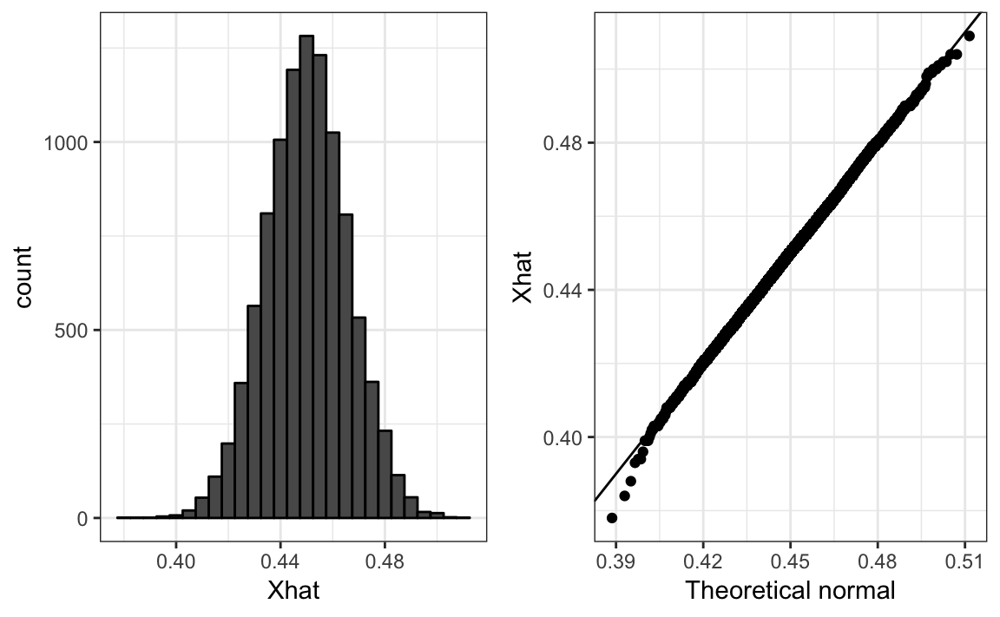
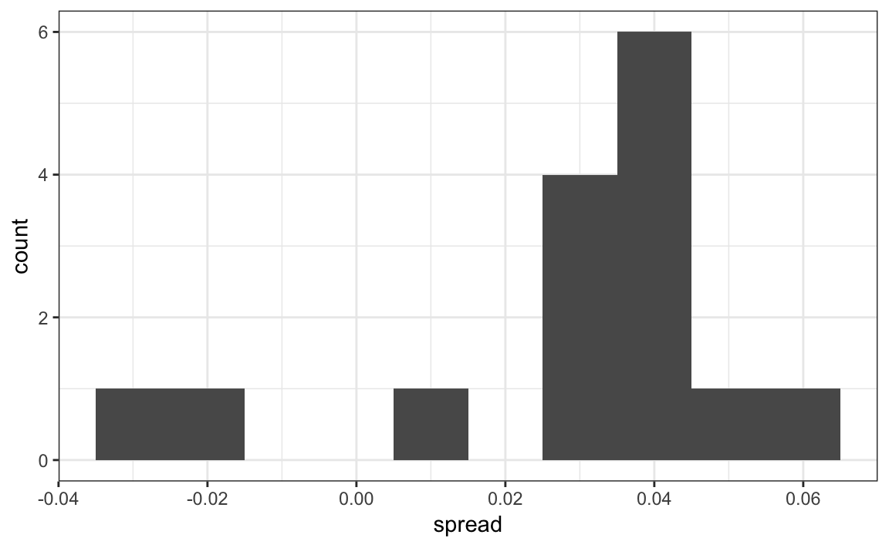
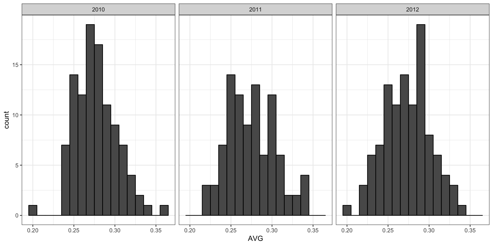
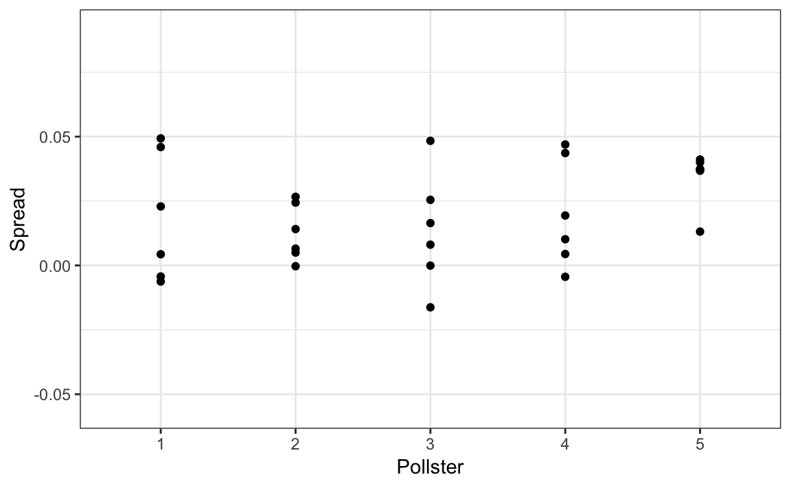
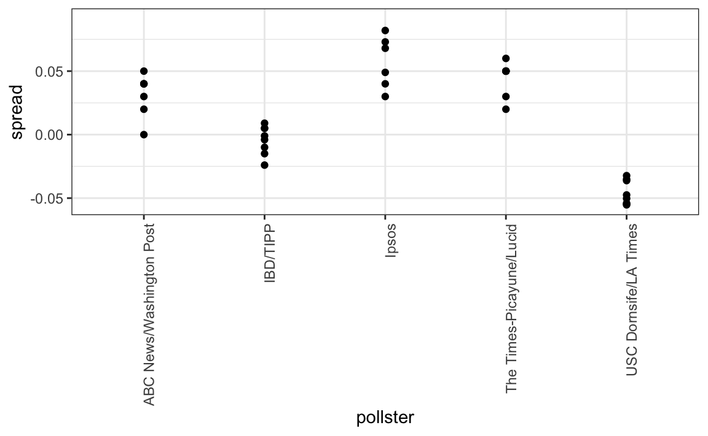
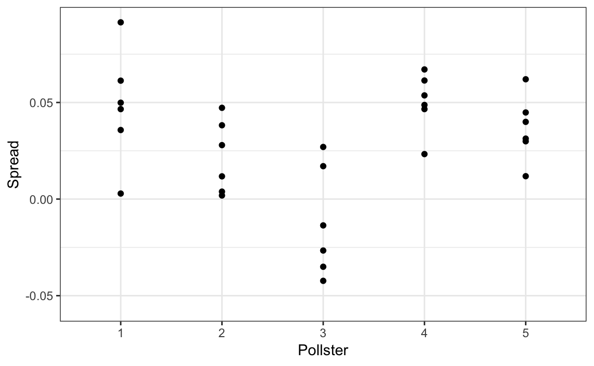
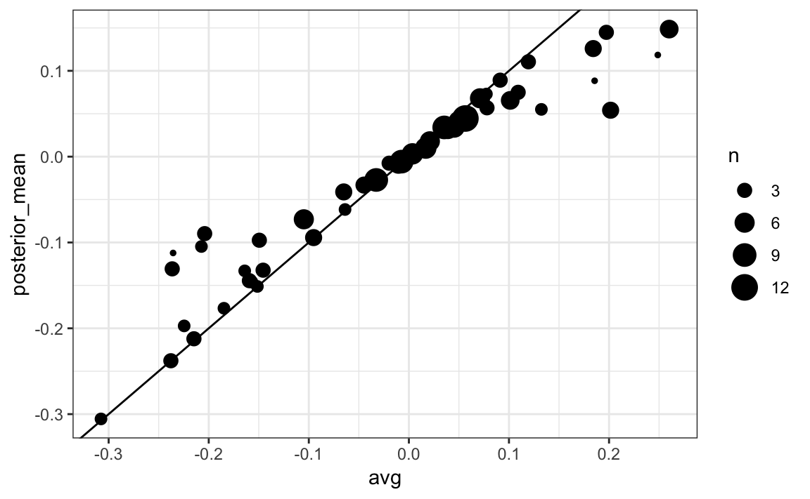
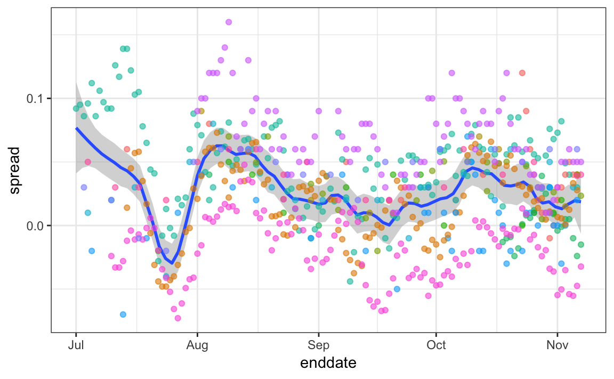

Chapter 25 Statistical Inference
In this chapter we will demonstrate how poll aggregators, such as FiveThirtyEight, collected and combined data reported by different experts to produce improved predictions. The two main statistical tools used by the aggregators are the topic of this chapter: inference and modeling. To begin to understand how election forecasting works, we need to understand the basic data point they use: poll results. After introducing how polls work we will briefly introduce the main concepts of statistical inference and modeling and then demonstrate how these were used to forecast elections.
25.1 Polls
Opinion polling has been conducted since the 19th century. The general goal of these is to describe the opinions held by a specific population on a given set of topics. In recent times, these polls have been pervasive during presidential elections. Polls are useful when interviewing every member of a particular population is logistically impossible. The general strategy is to interview a smaller group, chosen at random, and then infer the opinions of the entire population from the opinions of the smaller group. Statistical theory is used to justify the process. This theory is referred to as inference and it is the main topic of this chapter.
Perhaps the best known opinion polls are those conducted to determine which candidate is preferred by voters in a given election. Political strategists make extensive use of polls to decide, among other things, how to invest resources. For example, they may want to know which geographical locations to focus their ‘get out the vote’ efforts.
Elections are a particularly interesting case of opinion polls because the actual opinion of the entire population is revealed on election day. Of course, it costs millions of dollars to run an actual election which makes polling a cost effective strategy for those that want to forecast the results.
Although typically the results of these polls are kept private, similar polls are conducted by news organizations because results tend to be of interest to the general public and made public. We will eventually be looking at such data.
Real Clear Politics is an example of a news aggregator that organizes and publishes poll results. For example, here are examples of polls reporting estimates of the popular vote for the 2016 presidential election:

(Source: Real Clear Politics)
Although in the United States the popular vote does not determine the result of the presidential election, we will use it as an illustrative and simple example of how well polls work. Forecasting the election is a more complex process since it involves combining results from 50 states and DC and we describe it in Section 25.10.
Let’s make some observations about the table above. First, note that different polls, all taken days before the election, report a different spread: the estimated difference between support for the two candidates. Notice also that the reported spreads hover around what ended up being the actual result: Clinton won the popular vote by 2.1%. We also see a column titled MoE which stands for margin of error.
In this section, we will show how the probability concepts we learned in the previous chapter can be applied to develop the statistical approaches that make polls an effective tool. We will learn the statistical concepts necessary to define estimates and margins of errors, and show how we can use these to forecast final results relatively well and also provide an estimate of the precision of our forecast. Once we learn this, we will be able to understand two concepts that are ubiquitous in data science: confidence intervals and p-values. Finally, to understand probabilistic statements about the probability of a candidate winning, we will have to learn about Bayesian modelling. In the final sections, we put it all together to recreate the simplified version of the FiveThirtyEight model and apply it to the 2016 election.
We start by connecting probability theory to the task of using polls to learn about a population.
25.1.1 The sampling model for polls
To help us understand the connection between polls and what we have learned, let’s construct a similar situation to the one pollsters face. To mimic the challenge real pollsters face in terms of competing with other pollsters for media attention, we will use an urn full of beads to represent voters and pretend we are a competiting for a $25 dollar prize. The challenge is to guess the spread between the proportion of blue and red beads in this urn (in this case, a pickle jar):

Before making a prediction, you can take a sample (with replacement) from the urn. To mimic the fact that running polls is expensive, it cost you $0.10 per each bead you sample. Therefore, if your sample size is 250, and you win, you will break even since you will pay $25 to collect your $25 prize. Your entry into the competition can be an interval. If the interval you submit contains the true proportion, you get half what you paid and pass to the second phase of the competition. In the second phase, the entry with the smallest interval is selected as the winner.
The dslabs package includes a function that shows a random draw from this urn:
library(tidyverse)
library(dslabs)
take_poll(25)
Think about how you would construct your interval based on the data shown above.
We have just described a simple sampling model for opinion polls. The beads inside the urn represent the individuals that will vote on election day. Those that will vote for the Republican candidate are represented with red beads and the Democrats with the blue beads. For simplicity, assume there are no other colors; that is, that there are just two parties.
25.2 Populations, samples, parameters and estimates
We want to predict the proportion of blue beads in the urn. Let’s call this quantity \(p\), which then tells us the proportion of red beads \(1-p\), and the spread \(p - (1-p)\), which simplifies to \(2p - 1\).
In statistical textbooks, the beads in the urn are called the population. The proportion of blue beads in the population \(p\) is called a parameter. The 25 beads we see in the previous plot are called a sample. The task of statistical inference is to predict the parameter \(p\) using the observed data in the sample.
Can we do this with the 25 observations above? It is certainly informative. For example, given that we see 13 red and 12 blue beads, it is unlikely that \(p\) > .9 or \(p\) < .1. But are we ready to predict with certainty that there are more red beads than blue in the jar?
We want to construct an estimate of \(p\) using only the information we observe. An estimate should be thought of as a summary of the observed data that we think is informative about the parameter of interest. It seems intuitive to think that the proportion of blue beads in the sample \(0.48\) must be at least related to the actual proportion \(p\). But do we simply predict \(p\) to be 0.48? First, remember that the sample proportion is a random variable. If we run the command take_poll(25) four times we get a different answer each time since the sample proportion is a random variable.

Note that in the four random samples shown above, the sample proportions range from 0.44 to 0.60. By describing the distribution of this random variable, we will be able to gain insights into how good this estimate is and how we can make it better.
25.2.1 The sample average
Conducting an opinion poll is being modeled as taking a random sample from an urn. We are proposing the use of the proportion of blue beads in our sample as an estimate of the parameter \(p\). Once we have this estimate, we can can easily report an estimate for the spread \(2p-1\), but for simplicity we will illustrate the concepts for estimating \(p\). We will use our knowledge of probability to defend our use of the sample proportion and quantify how close we think it is from the population proportion \(p\).
We start by defining the random variable \(X=1\) if we pick a blue bead at random and \(X=0\) if it is red. This implies that the population is a list of 0s and 1s. If we sample \(N\) beads, then the average of the draws \(X_1, \dots, X_N\) is equivalent to the proportion of blue beads in our sample. This is because adding the \(X\)s is equivalent to counting the blue beads and dividing this count by the total \(N\) is equivalent to computing a proportion. We use the symbol \(\bar{X}\) to represent this average. In general, in statistics textbooks a bar on top of a symbol means the average.
The theory we just learned about the sum of draws becomes useful because if we that the distribution of the average \(\bar{X}\) because \(N\) is a non-random constant.
For simplicity, let’s assume that the draws are independent: after we see each sampled bead, we return it to the urn. In this case, what do we know about the distribution of the sum of draws? First, we know that the expected value of the sum of draws is \(N\) times the average of the values in the urn. We know that the average of the 0s and 1s in the urn must be \(p\), the proportion of blue beads.
Here we encounter an important difference with what we did in the Probability chapter: we don’t know what is in the urn. We know there are blue and red beads, but we don’t know how many of each. This is what we want to find out: we are trying to estimate \(p\).
25.2.2 Parameters
Just like we use variables to define unknowns in systems of equations, in statistical inference we define parameters to define unknown parts of our models. In the urn model which we are using to mimic an opinion poll, we do not know the proportion of blue beads in the urn. We define the parameters \(p\) to represent this quantity. \(p\) is the average of the urn because if we take the average of the 1s (blue) and 0s (red), we get the proportion of blue beads. Since our main goal is figuring out what is \(p\), we are going to estimate this parameter.
The ideas presented here on how we estimate parameters and provide insights into how good these estimates are, extrapolate to many data science tasks. For example, we may want to determine the difference in health improvement between patients receiving treatment and a control group. We may ask what are the health effects of smoking on a population? What are the differences in racial groups of fatal shootings by police? What is the rate of change in life expectancy in the US during the last 10 years? All these questions can be framed as a task of estimating a parameter from a sample.
25.2.3 Polling versus forecasting
Before we continue, let’s make an important clarification related to the practical problem of forecasting the election. If a poll is conducted four months before the election, it is estimating the \(p\) for that moment and not for election day. The \(p\) for election night might be different since people’s opinions fluctuate through time. The polls provided the night before the election tend to be the most accurate since opinions don’t change that much in a day. However, forecasters try to build tools that model how opinions vary across time and try to predict the election night results taking into consideration the fact that opinions fluctuate. We will describe some approaches for doing this in our a later section.
25.2.4 Properties of our estimate: expected value and standard error
To understand how good our estimate is, we will describe the statistical properties of the random variable defined above: the sample proportion \(\bar{X}\). Remember that \(\bar{X}\) is the sum of independent draws so the rules we covered in the probability chapter apply.
Using what we have learned, the expected value of the sum \(N\bar{X}\) is \(N \times\) the average of the urn, \(p\). So dividing by the non-random constant \(N\) gives us that the expected value of the average \(\bar{X}\) is \(p\). We can write it using our mathematical notation:
\[ \mbox{E}(\bar{X}) = p \]
We can also use what we learned to figure out the standard error: the standard error of the sum is \(\sqrt{N} \times\) the standard deviation of the urn. Can we compute the standard error of the urn? We learned a formula that tells us that it is \((1-0) \sqrt{p (1-p)}\) = \(\sqrt{p (1-p)}\). Because we are dividing the sum by \(N\), we arrive at the following formula for the standard error for the average:
\[ \mbox{SE}(\bar{X}) = \sqrt{p(1-p)/N} \]
This result reveals the power of polls. The expected value of the sample proportion \(\bar{X}\) is the parameter of interest \(p\) and we can make the standard error as small as we want by increasing \(N\). The law of large numbers tells us that with a large enough poll, our estimate converges to \(p\).
If we take a large enough poll to make our standard error about 1%, we will be quite certain about who will win. But how large does the poll have to be for the standard error to be this small?
One problem is that we do not know \(p\), so we can’t compute the standard error. However, for illustrative purposes, let’s assume that \(p=0.51\) and make a plot of the standard error versus the sample size \(N\):

From the plot we see that we would need a poll of over 10,000 people to get the standard error that low. We rarely see polls of this size due in part to costs. From the Real Clear Politics table, we learn that the sample sizes in opinion polls range from 500-3,500 people. For a sample size of 1,000 and \(p=0.51\), the standard error is:
sqrt(p*(1-p))/sqrt(1000)
#> [1] 0.0158or 1.5 percentage points. So even with large polls, for close elections, \(\bar{X}\) can lead us astray if we don’t realize it is a random variable. Nonetheless, we can actually say more about how close we get the \(p\) and we do that in Section 25.3
25.2.5 Exercises
Suppose you poll a population in which a proportion \(p\) of voters are Democrats and \(1-p\) are Republicans. Your sample size is \(N=25\). Consider the random variable \(S\) which is the total number of Democrats in your sample. What is the expected value of this random variable? Hint: it’s a function of \(p\).
What is the standard error of \(S\) ? Hint: it’s a function of \(p\).
Consider the random variable \(S/N\). This is equivalent to the sample average, which we have been denoting as \(\bar{X}\). What is the expected value of the \(\bar{X}\)? Hint: it’s a function of \(p\).
What is the standard error of \(\bar{X}\)? Hint: it’s a function of \(p\).
Write a line of code that gives you the standard error
sefor the problem above for several values of \(p\), specifically forp <- seq(0, 1, length = 100). Make a plot ofseversusp.Copy the code above and put it inside a for-loop to make the plot for \(N=25\), \(N=100\) and \(N=1000\).
If we are interested in the difference in proportions, \(p - (1-p)\), our estimate is \(d = \bar{X} - (1-\bar{X})\). Use the rules we learned about sums of random variables and scaled random variables to derive the expected value of \(d\).
What is the standard error of \(d\)?
If the actual \(p=.45\), it means the Republicans are winning by a relatively large margin since \(d= -.1\), which is a 10% margin of victory. In this case, what is the standard error of \(2\hat{X}-1\) if we take a sample of \(N=25\)?
Given the answer to 9, which of the following best describes your strategy of using a sample size of \(N=25\)?
A. The expected value of our estimate \(2\bar{X}-1\) is \(d\), so our prediction will be right on.
B. Our standard error is larger than the difference, so the chances of \(2\bar{X}-1\) being positive and throwing us off were not that small. We should pick a larger sample size.
C. The difference is 10% and the standard error is about 0.2, therefore much smaller than the difference.
D. Because we don’t know \(p\), we have no way knowing that making \(N\) larger would actually improve our standard error.
25.3 Central Limit Theorem in practice
The CLT tells us that the distribution function for a sum of draws is approximately normal. We also learned that dividing a normally distributed random variable by a constant is also a normally distributed variable. This implies that the distribution of \(\bar{X}\) is approximately normal.
In summary, we have that \(\bar{X}\) has an approximately normal distribution with expected value \(p\) and standard error \(\sqrt{p(1-p)/N}\).
Now how does this help us? Suppose we want to know what is the probability that we are within 1% from \(p\). We are basically asking what is
\[ \mbox{Pr}(| \bar{X} - p| \leq .01) \] which is the same as:
\[ \mbox{Pr}(\bar{X}\leq p + .01) - \mbox{Pr}(\bar{X} \leq p - .01) \]
Can we answer this question? We can use the mathematical trick we learned in the previous chapter. Subtract the expected value and divide by the standard error to get a standard normal random variable, call it \(Z\), on the left. Since \(p\) is the expected value and \(\mbox{SE}(\bar{X}) = \sqrt{p(1-p)/N}\) is the standard error we get:
\[ \mbox{Pr}\left(Z \leq \,.01 / \mbox{SE}(\bar{X}) \right) - \mbox{Pr}\left(Z \leq - \,.01 / \mbox{SE}(\bar{X}) \right) \]
One problem we have is that since we don’t know \(p\), we don’t know \(\mbox{SE}(\bar{X})\). But it turns out that the CLT still works if we estimate the standard error by using \(\bar{X}\) in place of \(p\). We say that we plug-in the estimate. Our estimate of the standard error is therefore:
\[ \hat{\mbox{SE}}(\bar{X})=\sqrt{\bar{X}(1-\bar{X})/N} \] In statistics textbooks, we use a little hat to denote estimates. The estimate can be constructed using the observed data and \(N\).
Now we continue with our calculation, but dividing by \(\hat{\mbox{SE}}(\bar{X})=\sqrt{\bar{X}(1-\bar{X})/N})\) instead. In our first sample we had 12 blue and 13 red so \(\bar{X} = 0.48\) and our estimate of standard error is:
x_hat <- 0.48
se <- sqrt(x_hat*(1-x_hat)/25)
se
#> [1] 0.0999And now we can answer the question of the probability of being close to \(p\). The answer is:
pnorm(0.01/se) - pnorm(-0.01/se)
#> [1] 0.0797Therefore, there is a small chance that we will be close. A poll of only \(N=25\) people is not really very useful, at least not for a close election.
Earlier we mentioned the margin of error. Now we can define it because it is simply two times the standard error, which we can now estimate. In our case it is:
1.96*se
#> [1] 0.196Why do we multiply by 1.96? Because if you ask what is the probability that we are within 1.96 standard errors from \(p\), we get:
\[ \mbox{Pr}\left(Z \leq \, 1.96\,\mbox{SE}(\bar{X}) / \mbox{SE}(\bar{X}) \right) - \mbox{Pr}\left(Z \leq - 1.96\, \mbox{SE}(\bar{X}) / \mbox{SE}(\bar{X}) \right) \] which is:
\[ \mbox{Pr}\left(Z \leq 1.96 \right) - \mbox{Pr}\left(Z \leq - 1.96\right) \]
which we know is about 95%:
pnorm(1.96)-pnorm(-1.96)
#> [1] 0.95Hence, there is a 95% probability that \(\bar{X}\) will be within \(1.96\times \hat{SE}(\bar{X})\), in our case 0, to \(p\). Note that 95% is somewhat of an arbitrary choice and sometimes other percentages are used, but it is the most commonly used value to define margin of error. We often round 1.96 up to 2 for simplicity of presentation.
In summary, the CLT tells us that our poll based on a sample size of \(25\) is not very useful. We don’t really learn much when the margin of error is this large. All we can really say is that the popular vote will not be won by a large margin. This is why pollsters tend to use larger sample sizes.
From the table above, we see that typical sample sizes range from 700 to 3500. To see how this gives us a much more practical result, notice that if we had obtained a \(\bar{X}\)=0.48 with a sample size of 2,000, our standard error \(\hat{\mbox{SE}}(\bar{X})\) would have been 0.011. So our result is an estimate of 48% with a margin of error of 2%. In this case, the result is much more informative and would make us think that there are more red balls than blue. Keep in mind, however, that this is hypothetical. We did not take a poll of 2,000 since we don’t want to ruin the competition.
25.3.1 A Monte Carlo simulation
Suppose we want to use a Monte Carlo simulation to corroborate the tools we have built using probability theory. To create the simulation, we would write code like this:
B <- 10000
N <- 1000
x_hat <- replicate(B, {
x <- sample(c(0,1), size = N, replace = TRUE, prob = c(1-p, p))
mean(x)
})The problem is, of course, we don’t know p. We could construct an urn like the one pictured above and run an analog (without a computer) simulation. It would take a long time, but you could take 10,000 samples, count the beads and keep track of the proportions of blue. We can use the function take_poll(n=1000) instead of drawing from an actual urn, but it would still take time to count the beads and enter the results.
One thing we therefore do to corroborate theoretical results is to pick one or several values of p and run the simulations. Let’s set p=0.45. We can then simulate a poll:
p <- 0.45
N <- 1000
x <- sample(c(0,1), size = N, replace = TRUE, prob = c(1-p, p))
x_hat <- mean(x)In this particular sample, our estimate is x_hat. We can use that code to do a Monte Carlo simulation:
B <- 10000
x_hat <- replicate(B, {
x <- sample(c(0,1), size = N, replace = TRUE, prob = c(1-p, p))
mean(x)
})To review, the theory tells us that \(\bar{X}\) is approximately normally distributed, has expected value \(p=\) 0.45 and standard error \(\sqrt{p(1-p)/N}\) = 0.016. The simulation confirms this:
mean(x_hat)
#> [1] 0.45
sd(x_hat)
#> [1] 0.0156A histogram and qq-plot confirm that the normal approximation is accurate as well:

Of course, in real life we would never be able to run such an experiment because we don’t know \(p\). But we could run it for various values of \(p\) and \(N\) and see that the theory does indeed work well for most values. You can easily do this by re-running the code above after changing p and N.
25.3.2 The spread
The competition is to predict the spread, not the proportion \(p\). However, because we are assuming there are only two parties, we know that the spread if \(p - (1-p) = 2p - 1\). As a result, everything we have done can easily be adapted to an estimate of \(2p - 1\). Once we have our estimate \(\bar{X}\) and \(\hat{\mbox{SE}}(\bar{X})\), we estimate the spread with \(2\bar{X} - 1\) and, since we are multiplying by 2, the standard error is \(2\hat{\mbox{SE}}(\bar{X})\). Note that subtracting 1 does not add any variability so it does not affect the standard error.
For our 25 sample above, our estimate \(p\) is .48 with margin of error .20 and our estimate of the spread is 0.04 with margin of error .40. Again, not a very useful sample size. However, the point is that once we have an estimate and standard error for \(p\), we have it for the spread \(2p-1\).
25.3.3 Bias: why not run a very large poll?
For realistic values of \(p\), say from 0.35 to 0.65, if we run a very large poll with 100,000 people, theory tells us that we would predict the election perfectly since the largest possible margin of error is around 0.3%. Here are the calculations:

One reason is that running such a poll is very expensive. Another possibly more important reason is that theory has its limitations. Polling is much more complicated than picking beads from an urn. Some people might lie to pollsters and others might not have phones. But perhaps the most important way an actual poll differs from an urn model is that we actually don’t know for sure who is in our population and who is not. How do we know who is going to vote? Are we reaching all possible voters? Hence, even if our margin of error is very small, it might not be exactly right that our expected value is \(p\). We call this bias. Historically, we observe that polls are indeed biased, although not by that much. The typical bias appears to be about 1-2%. This makes election forecasting a bit more interesting and we will talk about how to model this in a later chapter.
25.3.4 Exercises
Write an urn model function that takes the proportion of Democrats \(p\) and the sample size \(N\) as arguments and returns the sample average if Democrats are 1s and Republicans are 0s. Call the function
take_sample.Now assume
p <- 0.45and that your sample size is \(N=100\). Take a sample 10,000 times and save the vector ofmean(X) - pinto an object callederrors. Hint: use the function you wrote for exercise 1 to write this in one line of code.The vector
errorscontains, for each simulated sample, the difference between the actual \(p\) and our estimate \(\bar{X}\). We refer to this difference as the error. Compute the average and make a histogram of the errors generated in the Monte Carlo simulation and select which of the following best describes their distributions:mean(errors) hist(errors)A. The errors are all about 0.05.
B. The error are all about -0.05.
C. The errors are symmetrically distributed around 0.
D. The errors range from -1 to 1.
The error \(\bar{X}-p\) is a random variable. In practice, the error is not observed because we do not know \(p\). Here we observe it because we constructed the simulation. What is the average size of the error if we define the size by taking the absolute value \(\mid \bar{X} - p \mid\) ?
The standard error is related to the typical size of the error we make when predicting. We say size because we just saw that the errors are centered around 0, so thus the averate error value 0. For mathematical reasons related to the Central Limit Theorem, we actually use the standard deviation of
errorsrather than the average of the absolute values to quantify the typical size. What is this standard deviation of the errors?The theory we just learned tells us what this standard deviation is going to be because it is the standard error of \(\bar{X}\). What does theory tell us is the standard error of \(\bar{X}\) for a sample size of 100.
In practice, we don’t know \(p\), so we construct an estimate of the theoretical prediction based by plugging in \(\bar{X}\) for \(p\). Compute this estimate. Set the seed at 1 with
set.seed(1).Note how close the standard error estimates obtained from the Monte Carlo simulation (exercise 5), the theoretical prediction (exercise 6), and the estimate of the theoretical prediction (exercise 7) are. The theory is working and it gives us a practical approach to knowing the typical error we will make if we predict \(p\) with \(\bar{X}\). Another advantage that the theoretical result provides is that it gives an idea of how large a sample size is required to obtain the precision we need. Earlier we learned that the largest standard errors occur for \(p=0.5\). Create a plot of the largest standard error for \(N\) ranging from 100 to 5,000. Based on this plot, how large does the sample size have to be to have a standard error of about 1%?
A. 100
B. 500
C. 2,500
D. 4,000
For sample size \(N=100\), the central limit theorem tells us that the distribution of \(\bar{X}\) is:
A. practically equal to \(p\).
B. approximately normal with expected value \(p\) and standard error \(\sqrt{p(1-p)/N}\).
C. approximately normal with expected value \(\bar{X}\) and standard error \(\sqrt{\bar{X}(1-\bar{X})/N}\).
D. not a random variable.
Based on the answer from exercise 8, the error \(\bar{X} - p\) is:
A. practically equal to 0.
B. approximately normal with expected value \(0\) and standard error \(\sqrt{p(1-p)/N}\).
C. approximately normal with expected value \(p\) and standard error \(\sqrt{p(1-p)/N}\).
D. not a random variable.
To corroborate your answer to exercise 9, make a qq-plot of the
errorsyou generated in exercise 2 to see if they follow a normal distribution.If \(p=0.45\) and \(N=100\) as in exercise 2, use the CLT to estimate the probability that \(\bar{X}>0.5\). You can assume you know \(p=0.45\) for this calculation.
Assume you are in a practical situation and you don’t know \(p\). Take a sample of size \(N=100\) and obtain a sample average of \(\bar{X} = 0.51\). What is the CLT approximation for the probability that your error is equal or larger than 0.01?
25.4 Confidence intervals
Confidence intervals are a very useful concept widely employed by data analysts. A version of these that are commonly seen come from the ggplot geometry geom_smooth. Here is an example using a temperature dataset available in R:

In the Machine Learning part we will learn how the curve is formed, but for now consider the shaded area around the curve. This is created using the concept of confidence intervals.
In our earlier competition, you were asked to give an interval. If the interval you submitted includes the \(p\), you get half the money you spent on your “poll” back and pass to the next stage of the competition. One way to pass to the second round is to report a very large interval. For example, the interval \([0,1]\) is guaranteed to include \(p\). However, with an interval this big, we have no chance of winning the competition. Similarly, if you are an election forecaster and predict the spread will be between -100% and 100%, you will be ridiculed for stating the obvious. Even a smaller interval, such as saying the spread will be between -10 and 10%, will not be considered serious.
On the other hand, the smaller the interval we report, the smaller our chances are of winning the prize. Likewise, a bold pollster that reports very small intervals and misses the mark most of the time will not be considered a good pollster. We want to be somewhere in between.
We can use the statistical theory we have learned to compute the probability of any given interval including \(p\). If we are asked to create an interval with, say, a 95% chance of including \(p\), we can do that as well. These are called 95% confidence intervals.
When a pollster reports an estimate and a margin of error, they are, in a way, reporting a 95% confidence interval. Let’s show how this works mathematically.
We want to know the probability that the interval \([\bar{X} - 2\hat{\mbox{SE}}(\bar{X}), \bar{X} - 2\hat{\mbox{SE}}(\bar{X})]\) contains the true proportion \(p\). First, consider that the start and end of these intervals are random variables: every time we take a sample, they change. To illustrate this, run the Monte Carlo simulation above twice. We use the same parameters as above:
p <- 0.45
N <- 1000And notice that the interval here:
x <- sample(c(0, 1), size = N, replace = TRUE, prob = c(1-p, p))
x_hat <- mean(x)
se_hat <- sqrt(x_hat * (1 - x_hat) / N)
c(x_hat - 1.96 * se_hat, x_hat + 1.96 * se_hat)
#> [1] 0.433 0.495is different from this one:
x <- sample(c(0,1), size=N, replace=TRUE, prob=c(1-p, p))
x_hat <- mean(x)
se_hat <- sqrt(x_hat * (1 - x_hat) / N)
c(x_hat - 1.96 * se_hat, x_hat + 1.96 * se_hat)
#> [1] 0.443 0.505Keep sampling and creating intervals and you will see the random variation.
To determine the probability that the interval includes \(p\), we need to compute this: \[ \mbox{Pr}\left(\bar{X} - 1.96\hat{\mbox{SE}}(\bar{X}) \leq p \leq \bar{X} + 1.96\hat{\mbox{SE}}(\bar{X})\right) \]
By subtracting and dividing the same quantities in all parts of the equation, we get that the above is equivalent to:
\[ \mbox{Pr}\left(-1.96 \leq \frac{\bar{X}- p}{\hat{\mbox{SE}}(\bar{X})} \leq 1.96\right) \]
The term in the middle is an approximately normal random variable with expected value 0 and standard error 1, which we have been denoting with \(Z\), so we have:
\[ \mbox{Pr}\left(-1.96 \leq Z \leq 1.96\right) \]
which we can quickly compute using :
pnorm(1.96) - pnorm(-1.96)
#> [1] 0.95proving that we have a 95% probability.
If we want to have a larger probability, say 99%, we need to multiply by whatever z satisfies the following:
\[ \mbox{Pr}\left(-z \leq Z \leq z\right) = 0.99 \]
Using:
z <- qnorm(0.995)
z
#> [1] 2.58will achieve this because by definition pnorm(qnorm(0.995)) is 0.995 and by symmetry pnorm(1-qnorm(0.995)) is 1 - 0.995. As a consequence, we have that:
pnorm(z) - pnorm(-z)
#> [1] 0.99is 0.995 - 0.005 = 0.99. We can use this approach for any proportion \(p\): we set z = qnorm(1 - (1 - p)/2) becuase \(1 - (1 - p)/2 + (1 - p)/2 = p\).
So, for example, for \(p=0.95\), \((1-p)/2 = 0.975\) and we get the 1.96 we have been using:
qnorm(0.975)
#> [1] 1.9625.4.1 A Monte Carlo simulation
We can run a Monte Carlo simulation to confirm that, in fact, a 95% confidence interval includes \(p\) 95% of the time.
N <- 1000
B <- 10000
inside <- replicate(B, {
x <- sample(c(0,1), size = N, replace = TRUE, prob = c(1-p, p))
x_hat <- mean(x)
se_hat <- sqrt(x_hat * (1 - x_hat) / N)
between(p, x_hat - 1.96 * se_hat, x_hat + 1.96 * se_hat)
})
mean(inside)
#> [1] 0.948The following plot shows the first 100 confidence intervals. In this case, we created the simulation so the black line denotes the parameter we are trying to estimate:

25.4.2 The correct language
When using the theory we described above, it is important to remember that it is the intervals that are random, not \(p\). In the plot above, we can see the random intervals moving around and \(p\), represented with the vertical line, staying in the same place. The proportion of blue in the urn \(p\) is not. So the 95% relates to the probability that this random interval falls on top of \(p\). Saying the \(p\) has a 95% of being between this and that is technically an incorrect statement because \(p\) is not random.
25.4.3 Exercises
For these exercises, we will use actual polls from the 2016 election. You can load the data from the dslabs package.
library(dslabs)
data("polls_us_election_2016")Specifically, we will use all the national polls that ended within one week before the election.
library(tidyverse)
polls <- polls_us_election_2016 %>%
filter(enddate >= "2016-10-31" & state == "U.S.") For the first poll, you can obtain the samples size and estimated Clinton percentage with:
N <- polls$samplesize[1] x_hat <- polls$rawpoll_clinton[1]/100Assume there are only two candidates and construct a 95% confidence interval for the election night proportion \(p\).
Now use
dplyrto add a confidence interval as two columns, call themlowerandupper, to the objectpoll. Then useselectto show thepollster,enddate,x_hat,lower,uppervariables. Hint: define temporary columnsx_hatandse_hat.The final tally for the popular vote was Clinton 48.2% and Trump 46.1%. Add a column, call it
hit, to the previous table stating if the confidence interval included the true proportion \(p=0.482\) or not.For the table you just created, what proportion of confidence intervals included \(p\)?
If these confidence intervals are constructed correctly, and the theory holds up, what proportion should include \(p\)?
A much smaller proportion of the polls than expected produce confidence intervals containing \(p\). If you look closely at the table, you will see that most polls that fail to include \(p\) are underestimating. The reason for this is undecided voters, individuals polled that do not yet know who they will vote for or do not want to say. Because, historically, undecideds divide evenly between the two main candidates on election day, it is more informative to estimate the spread or the difference between the proportion of two candidates \(d\), which in this election was \(0.482 - 0.461 = 0.021\). Assume that there are only two parties and that \(d = 2p - 1\), define:
polls <- polls_us_election_2016 %>% filter(enddate >= "2016-10-31" & state == "U.S.") %>% mutate(d_hat = rawpoll_clinton / 100 - rawpoll_trump / 100)and re-do exercise 1, but for the difference.
Now repeat exercise 3, but for the difference.
Now repeat exercise 4, but for the difference.
Although the proportion of confidence intervals goes up substantially, it is still lower that 0.95. In the next chapter, we learn the reason for this. To motivate this, make a plot of the error, the difference between each poll’s estimate and the actual \(d=0.021\). Stratify by pollster.
Re-do the plot that you made for exercise 9, but only for pollsters that took five or more polls.
25.5 Power
Pollsters are not successful at providing correct confidence intervals, but rather at predicting who will win. When we took a 25 bead sample size, the confidence interval for the spread:
N <- 25
x_hat <- 0.48
(1.96 * x_hat - 1) + c(-1.96, 1.96) * 2 * sqrt(x_hat * (1-x_hat) / sqrt(N))
#> [1] -0.935 0.817includes 0. If this were a poll and we were forced to make a declaration, we would have to say it was a “toss-up”.
A problem with our poll results is that given the sample size and the value of \(p\), we would have to sacrifice on the probability of an incorrect call to create an interval that does not include 0.
This does not mean that the election is close. It only means that we have a small sample size. In statistical textbooks this is called lack of power. In the context of polls, power is the probability of detecting spreads different from 0.
By increasing our sample size, we lower our standard error and therefore have a much better chance of detecting the direction of the spread.
25.6 p-values
p-values are ubiquitous in the scientific literature. They are related to confidence intervals so we introduce the concept here.
Let’s consider the blue and red beads. Suppose that rather than wanting an estimate of the spread or the proportion of blue, I am interested only in the question: are there more blue beads or red beads? I want to know if the spread \(2p-1 > 0\).
Say we take a random sample of \(N=100\) and we observe \(52\) blue beads, which gives us \(2\bar{X}-1=0.04\). This seems to be pointing to the existence of more blue than red beads since 0.04 is larger than 0. However, as data scientists we need to be skeptical. We know there is chance involved in this process and we could get a 52 even when the actual spread is 0. We call the assumption that the spread is \(2p-1=0\) a null hypothesis. The null hypothesis is the skeptic’s hypothesis. We have observed a random variable \(2*\bar{X}-1 = 0.04\) and the p-value is the answer to the question: how likely is it to see a value this large, when the null hypothesis is true? So we write:
\[\mbox{Pr}(\mid \bar{X} - 0.5 \mid > 0.02 ) \]
assuming the \(2p-1=0\) or \(p=0.5\). Under the null hypothesis we know that:
\[ \sqrt{N}\frac{\bar{X} - 0.5}{\sqrt{0.5(1-0.5)}} \]
is standard normal. We therefore can compute the probability above, which is the p-value.
\[\mbox{Pr}\left(\sqrt{N}\frac{\mid \bar{X} - 0.5\mid}{\sqrt{0.5(1-0.5)}} > \sqrt{N} \frac{0.02}{ \sqrt{0.5(1-0.5)}}\right)\]
N=100
z <- sqrt(N)*0.02/0.5
1 - (pnorm(z) - pnorm(-z))
#> [1] 0.689In this case, there is actually a large chance of seeing 52 or larger under the null hypothesis.
Keep in mind that there is a close connection between p-values and confidence intervals. If a 95% confidence interval of the spread does not include 0, we know that the p-value must be smaller than 0.05.
To learn more about p-values, you can consult any statistics textbook. However, in general, we prefer reporting confidence intervals over p-values since it gives us an idea of the size of the estimate. If we just report the p-value we provide no information about the significance of the finding in the context of the problem.
25.7 Statistical models
“All models are wrong, but some are useful” -George E. P. Box
In this section we will describe how statistical models were used by Fivethirtyeight, and other poll aggregotors, to improve the election forecasts power of individual polls.
25.7.1 Poll aggregators
As we described earlier, a few weeks before the 2012 election Nate Silver was giving Obama a 90% chance of winning. How was Mr. Silver so confident? We will use a Monte Carlo simulation to illustrate the insight Mr. Silver had and others missed. To do this, we generate results for 12 polls taken the week before the election. We mimic sample sizes from actual polls and construct and report 95% confidence intervals for each of the 12 polls. We save the results from this simulation in a data frame and add a poll ID column.
library(tidyverse)
library(dslabs)
d <- 0.039
Ns <- c(1298, 533, 1342, 897, 774, 254, 812, 324, 1291, 1056, 2172, 516)
p <- (d + 1) / 2
polls <- map_df(Ns, function(N) {
x <- sample(c(0,1), size=N, replace=TRUE, prob=c(1-p, p))
x_hat <- mean(x)
se_hat <- sqrt(x_hat * (1 - x_hat) / N)
list(estimate = 2 * x_hat - 1,
low = 2*(x_hat - 1.96*se_hat) - 1,
high = 2*(x_hat + 1.96*se_hat) - 1,
sample_size = N)
}) %>% mutate(poll = seq_along(Ns))Here is a visualization showing the intervals the pollsters would have reported for the difference between Obama and Romney:

Not surprisingly, all 12 polls report confidence intervals that include the election night result (dashed line). However, all 12 polls also include 0 (solid black line) as well. Therefore, if asked individually for a prediction, the pollsters would have to say: it’s a toss-up. Below we describe a key insight they are missing.
Poll aggregators, such as Nate Silver, realized that by combining the results of different polls you could greatly improve precision. By doing this, we are effectively conducting a poll with a huge sample size. We can therefore report a smaller 95% confidence interval and a more precise prediction.
Although as aggregators we do not have access to the raw poll data, we can use mathematics to reconstruct what we would have obtained had we made one large poll with:
sum(polls$sample_size)
#> [1] 11269participants. Basically, we construct an estimate of the spread, let’s call it \(d\), with a weighted average in the following way:
d_hat <- polls %>%
summarize(avg = sum(estimate*sample_size) / sum(sample_size)) %>%
pull(avg)Once we have an estimate of \(d\), we can construct an estimate for the proportion voting for Obama, which we can then use to estimate the standard error. Once we do this, we see that our margin of error is 0.018.
Thus, we can predict that the spread will be 3.1 plus or minus 1.8, which not only includes the actual result we eventually observed on election night, but is quite far from including 0. Once we combine the 12 polls, we become quite certain that Obama will win the popular vote.

Of course, this was just a simulation to illustrate the idea. The actual data science exercise of forecasting elections is much more complicated and it involves modeling. Below we explain how pollsters fit multilevel models to the data and use this to forecast election results. In the 2008 and 2012 US presidential elections, Nate Silver used this approach to make an almost perfect prediction and silence the pundits.
Since the 2008 elections, other organizations have started their own election forecasting group that, like Nate Silver’s, aggregates polling data and uses statistical models to make predictions. In 2016, forecasters underestimated Trump’s chances of winning greatly.

(Source: New York Times)
For example, the Princeton Election Consortium gave Trump less than 1% chance of winning, while the Huffington Post gave him a 2% chance. In contrast, FiveThirtyEight had Trump’s probability of winning at 29%, higher than tossing two coins and getting two heads. In fact, four days before the election FiveThirtyEight published an article titled Trump Is Just A Normal Polling Error Behind Clinton. By understanding statistical models and how these forecasters use them, we will start to understand how this happened.
Although not nearly as interesting as predicting the electoral college, for illustrative purposes we will start by looking at predictions for the popular vote. FiveThirtyEight predicted a 3.6% advantage for Clinton, included the actual result of 2.1% (48.2% to 46.1%) in their interval, and was much more confident about Clinton winning the election, giving her a 81.4% chance.

(Source: FiveThirtyEight)
We introduce actual data from the 2016 US presidential election to show how models are motivated and built to produce these predictions.
25.7.2 Poll data
We use public polling data organized by FiveThirtyEight for the 2016 presidential election. The data is included as part of of the dslabs package:
data(polls_us_election_2016)
names(polls_us_election_2016)
#> [1] "state" "startdate" "enddate"
#> [4] "pollster" "grade" "samplesize"
#> [7] "population" "rawpoll_clinton" "rawpoll_trump"
#> [10] "rawpoll_johnson" "rawpoll_mcmullin" "adjpoll_clinton"
#> [13] "adjpoll_trump" "adjpoll_johnson" "adjpoll_mcmullin"The table includes results for national polls, as well as state polls, taken during the year prior to the election. For this first example, we will filter the data to include national polls conducted during the week before the election. We also remove polls that FiveThirtyEight has determined not to be reliable and graded with a “B” or less. Some polls have not been graded and we include those:
polls <- polls_us_election_2016 %>%
filter(state == "U.S." & enddate >= "2016-10-31" &
(grade %in% c("A+","A","A-","B+") | is.na(grade)))We add a spread estimate:
polls <- polls %>%
mutate(spread = rawpoll_clinton/100 - rawpoll_trump/100)For this example, we will assume that there are only two parties and call \(p\) the proportion voting for Clinton and \(1-p\) the proportion voting for Trump. We are interested in the spread \(2p-1\). Let’s call the spread \(d\) (for difference).
We have 49 estimates of the spread. The theory we learned tells us that these estimates are a random variable with a probability distribution that is approximately normal. The expected value is the election night spread \(d\) and the standard error is \(\sqrt{p (1 - p) / N}\). Assuming the urn model we described earlier is a good one, we can use this information to construct a confidence interval based on the aggregated data. The estimated spread is:
d_hat <- polls %>%
summarize(d_hat = sum(spread * samplesize) / sum(samplesize)) %>%
pull(d_hat)and the standard error is:
p_hat <- (d_hat+1)/2
moe <- 1.96 * 2 * sqrt(p_hat * (1 - p_hat) / sum(polls$samplesize))
moe
#> [1] 0.00662So we report a spread of 1.43% with a margin of error of 0.66%. On election night, we discover that the actual percentage was 2.1%, which is outside a 95% confidence interval. What happened?
A histogram of the reported spreads shows a problem:
polls %>%
ggplot(aes(spread)) +
geom_histogram(color="black", binwidth = .01)
The data does not appear to be normally distributed and the standard error appears to be larger than 0.007. The theory is not quite working here.
25.7.3 Pollster bias
Notice that various pollsters are involved and some are taking several polls a week:
polls %>% group_by(pollster) %>% summarize(n())
#> # A tibble: 15 x 2
#> pollster `n()`
#> <fct> <int>
#> 1 ABC News/Washington Post 7
#> 2 Angus Reid Global 1
#> 3 CBS News/New York Times 2
#> 4 Fox News/Anderson Robbins Research/Shaw & Company Research 2
#> 5 IBD/TIPP 8
#> 6 Insights West 1
#> # ... with 9 more rowsLet’s visualize the data for the pollsters that are regularly polling:

This plot reveals a unexpected result. First, consider that the standard error predicted by theory for each poll:
polls %>% group_by(pollster) %>%
filter(n() >= 6) %>%
summarize(se = 2 * sqrt(p_hat * (1-p_hat) / median(samplesize)))
#> # A tibble: 5 x 2
#> pollster se
#> <fct> <dbl>
#> 1 ABC News/Washington Post 0.0265
#> 2 IBD/TIPP 0.0333
#> 3 Ipsos 0.0225
#> 4 The Times-Picayune/Lucid 0.0196
#> 5 USC Dornsife/LA Times 0.0183is between 0.018 and 0.033, which agrees with the within poll variation we see. However, there appears to be differences across the polls. Note, for example, how the USC Dornsife/LA Times pollster is predicting a 4% win for Trump, while Ipsos is predicting a win larger than 5% for Clinton. The theory we learned says nothing about different pollsters producing polls with different expected values. All the polls should have the same expected value. FiveThirtyEight refers to these differences as “house effects”. We can also call them pollster bias.
In the following section, rather than use the urn model theory, we are instead going to develop a data-driven model.
25.7.4 A data driven model
For each pollster, let’s collect their last reported result before the election:
one_poll_per_pollster <- polls %>% group_by(pollster) %>%
filter(enddate == max(enddate)) %>%
ungroup()Here is a histogram of the data for these 15 pollsters:
qplot(spread, data = one_poll_per_pollster, geom = "histogram", binwidth = 0.01)
In the previous section, we saw that using the urn model theory to combine these results might not be appropriate due to the pollster effect. Instead, we will model this spread data directly.
The new model can also be thought of as an urn model, although the connection is not as direct. Rather than 0s (Republicans) and 1s (Democrats), our urn now contains poll results from all possible pollsters. We assume that the expected value of our urn is the actual spread \(d=2p-1\).
Because instead of 0s and 1s, our urn contains continuous numbers between -1 and 1, the standard deviation of the urn is no longer \(\sqrt{p(1-p)}\). Rather than voter sampling variability, the standard error now includes the pollster to pollster variability. Our new urn, also includes the sampling variability from the polling. Regardless, this standard deviation is now an unknown parameter. In statistics textbooks, the Greek symbol \(\sigma\) is used to represent this parameter.
In summary, we have two unknown parameters: the expected value \(d\) and the standard deviation \(\sigma\).
Our task is to estimate \(d\). Because we model the observed values \(X_1,\dots X_N\) as a random sample from the urn, the CLT might still work in this situation because it is an average of independent random variables. For a large enough sample size \(N\), the probability distribution of the sample average \(\bar{X}\) is approximately normal with expected value \(\mu\) and standard error \(\sigma/\sqrt{N}\). If we are willing to consider \(N=15\) large enough, we can use this to construct confidence intervals.
A problem is that we don’t know \(\sigma\). But theory tells us that we can estimate the urn model \(\sigma\) with the sample standard deviation defined as:
\[ s = \sqrt{ \frac{1}{N-1}\sum_{i=1}^N (X_i - \bar{X})^2} \]
Unlike for the population standard deviation definition, we now divide by \(N-1\). This makes \(s\) a better estimate of \(\sigma\). There is a mathematical explanation for this, which is explained in most statistics textbooks, but we don’t cover it here.
The sd function in R computes the sample standard deviation:
sd(one_poll_per_pollster$spread)
#> [1] 0.0242We are now ready to form a new confidence interval based on our new data driven model:
results <- one_poll_per_pollster %>%
summarize(avg = mean(spread),
se = sd(spread) / sqrt(length(spread))) %>%
mutate(start = avg - 1.96 * se,
end = avg + 1.96 * se)
round(results * 100, 1)
#> avg se start end
#> 1 2.9 0.6 1.7 4.1Our confidence interval is wider now since it incorporates the pollster variability. It does include the election night result of 2.1%. Also, note that it was small enough not to include 0, which means we were confident Clinton would win the electoral vote.
Are we now ready to declare a probability of Clinton winning the popular vote? Not yet. In our model \(d\) is a fixed parameter so we can’t talk about probabilities. To provide probabilities, we will need to learn about Bayesian statistics.
25.7.5 Exercises
- We have been using urn models to motivate the use of probability models. Most data science applications are not related to data obtained from urns. More common are data that come from individuals. The reason probability plays a role here is because the data come from a random sample. The random sample is taken from a population and the urn serves as an analogy for the population.
Let’s revisit the heights dataset. Suppose we consider the males in our course the population.
```r
library(dslabs)
data(heights)
x <- heights %>% filter(sex == "Male") %>%
pull(height)
```
Mathematically speaking, `x` is our population. Using the urn analogy, we have an urn with the values of `x` in it. What are the average and standard deviation of our population?Call the population average computed above \(\mu\) and the standard deviation \(\sigma\). Now take a sample of size 50, with replacement, and construct an estimate for \(\mu\) and \(\sigma\).
What does the theory tell us about the sample average \(\bar{X}\) and how it is related to \(\mu\)?
A. It is practically identical to \(\mu\).
B. It is a random variable with expected value \(\mu\) and standard error \(\sigma/\sqrt{N}\).
C. It is a random variable with expected value \(\mu\) and standard error \(\sigma\).
D. Contains no information.
So how is this useful? We are going to use an oversimplified yet illustrative example. Suppose we want to know the average height of our male students, but we only get to measure 50 of the 708. We will use \(\bar{X}\) as our estimate. We know from the answer to exercise 3 that the standard estimate of our error \(\bar{X}-\mu\) is \(\sigma/\sqrt{N}\). We want to compute this, but we don’t know \(\sigma\). Based on what is described in this section, show your estimate of \(\sigma\).
Now that we have an estimate of \(\sigma\), let’s call our estimate \(s\). Construct a 95% confidence interval for \(\mu\).
Now run a Monte Carlo simulation in which you compute 10,000 confidence intervals as you have just done. What proportion of these intervals include \(\mu\)?
In this section, we talked about pollster bias. We used visualization to motivate the presence of such bias. Here we will give it a more rigorous treatment. We will consider two pollsters that conducted daily polls. We will look at national polls for the month before the election.
data(polls_us_election_2016) polls <- polls_us_election_2016 %>% filter(pollster %in% c("Rasmussen Reports/Pulse Opinion Research", "The Times-Picayune/Lucid") & enddate >= "2016-10-15" & state == "U.S.") %>% mutate(spread = rawpoll_clinton/100 - rawpoll_trump/100)We want to answer the question: is there a poll bias? Make a plot showing the spreads for each poll.
The data does seem to suggest there is a difference. However, these data are subject to variability. Perhaps the differences we observe are due to chance.
The urn model theory says nothing about pollster effect. Under the urn model, both pollsters have the same expected value: the election day difference, that we call \(d\).
To answer the question “is there an urn model?”, we will model the observed data \(Y_{i,j}\) in the following way:
\[ Y_{i,j} = d + b_i + \varepsilon_{i,j} \]
with \(i=1,2\) indexing the two pollsters, \(b_i\) the bias for pollster \(i\) and \(\varepsilon_ij\) poll to poll chance variability. We assume the \(\varepsilon\) are independent from each other, have expected value \(0\) and standard deviation \(\sigma_i\) regardless of \(j\).
Which of the following best represents our question?
A. Is \(\varepsilon_{i,j}\) = 0?
B. How close are the \(Y_{i,j}\) to \(d\)?
C. Is \(b_1 \neq b_2\)?
D. Are \(b_1 = 0\) and \(b_2 = 0\) ?
In the right side of this model only \(\varepsilon_{i,j}\) is a random variable. The other two are constants. What is the expected value of \(Y_{1,j}\)?
Suppose we define \(\bar{Y}_1\) as the average of poll results from the first poll, \(Y_{1,1},\dots,Y_{1,N_1}\) with \(N_1\) the number of polls conducted by the first pollster:
polls %>% filter(pollster=="Rasmussen Reports/Pulse Opinion Research") %>% summarize(N_1 = n())What is the expected values \(\bar{Y}_1\)?
What is the standard error of \(\bar{Y}_1\) ?
Suppose we define \(\bar{Y}_2\) as the average of poll results from the first poll, \(Y_{2,1},\dots,Y_{2,N_2}\) with \(N_2\) the number of polls conducted by the first pollster. What is the expected value \(\bar{Y}_2\)?
What is the standard error of \(\bar{Y}_2\) ?
Using what we learned by answering the questions above, what is the expected value of \(\bar{Y}_{2} - \bar{Y}_1\)?
Using what we learned by answering the questions above, what is the standard error of \(\bar{Y}_{2} - \bar{Y}_1\)?
The answer to the question above depends on \(\sigma_1\) and \(\sigma_2\), which we don’t know. We learned that we can estimate these with the sample standard deviation. Write code that computes these two estimates.
What does the CLT tells us about the distribution of \(\bar{Y}_2 - \bar{Y}_1\)?
A. Nothing because this is not the average of a sample.
B. Because the \(Y_{ij}\) are approximately normal, so are the averages.
C. Note that \(\bar{Y}_2\) and \(\bar{Y}_1\) are sample averages, so if we assume \(N_2\) and \(N_1\) are large enough, each is approximately normal. The difference of normals is also normal.
D. The data are not 0 or 1, so CLT does not apply.
We have constructed a random variable that has expected value \(b_2 - b_1\), the pollster bias difference. If our model holds, then this random variable has an approximately normal distribution and we know its standard error. The standard error depends on \(\sigma_1\) and \(\sigma_2\), but we can plug the sample standard deviations we computed above. We started off by asking: is \(b_2 - b_1\) different from 0? Use all the information we have learned above to construct a 95% confidence interval for the difference \(b_2\) and \(b_1\).
The confidence interval tells us there is relatively strong pollster effect resulting in a difference of about 5%. Random variability does not seem to explain it. We can compute a p-value to relay the fact that chance does not explain it. What is the p-value?
The statistic formed by dividing our estimate of \(b_2-b_1\) by its estimated standard error:
\[ \frac{\bar{Y}_2 - \bar{Y}_1}{\sqrt{s_2^2/N_2 + s_1^2/N_1}} \]
is called the t-statistic. Now notice that we have more than two pollsters. We can also test for pollster effect using all pollsters, not just two. The idea is to compare the variability across polls to variability within polls. We can actually construct statistics to test for effects and approximate their distribution. The area of statistics that does this is called Analysis of Variance or ANOVA. We do not cover it here, but ANOVA provides a very useful set of tools to answer questions such as: is there a pollster effect?
For this exercise, create a new table:
polls <- polls_us_election_2016 %>% filter(enddate >= "2016-10-15" & state == "U.S.") %>% group_by(pollster) %>% filter(n() >= 5) %>% mutate(spread = rawpoll_clinton/100 - rawpoll_trump/100) %>% ungroup()Compute the average and standard deviation for each pollster and examine the variability across the averages and how it compares to the variability within the pollsters, summarized by the standard deviation.
25.8 Bayesian statistics
What does it mean when an election forecaster tell us that a given candidate has a 90% chance of winning? In the context of the urn model, this would be equivalent to stating that the probability \(p>0.5\) is 90%. However, as we discussed earlier, in the urn model \(p\) is a fixed parameter and it does not make sense to talk about probability. With the Bayesian approach we assume \(p\) is random.
Forecasters also use models to describe variability at different levels. For example, sampling variability, pollster to pollster variability, day to day variability, and election to election variability. One of the most successful approaches used for this are hierarchical models, which can be explained in the context of Bayesian statistics.
25.8.1 Bayes theorem
We start by reviewing Bayes theorem. We do this using a hypothetical cystic fibrosis test as an example. Suppose a test for cystic fibrosis has an accuracy of 99%. We will use the following notation:
\[ \mbox{Prob}(+ \mid D=1)=0.99, \mbox{Prob}(- \mid D=0)=0.99 \]
with \(+\) meaning a positive test and \(D\) representing if you actually have the disease (1) or not (0).
Suppose we select a random person and they test positive, what is the probability that they have the disease? We write this as \(\mbox{Prob}(D=1 \mid +)?\) The cystic fibrosis rate is 1 in 3,900 which implies that \(\mbox{Prob}(D=1)=0.00025\). To answer this question, we will use Bayes Theorem, which in general tells us that:
\[ \mbox{Pr}(A \mid B) = \frac{\mbox{Pr}(B \mid A)\mbox{Pr}(A)}{\mbox{Pr}(B)} \]
This equation applied to our problem becomes:
\[ \begin{aligned} \mbox{Pr}(D=1 \mid +) & = \frac{ P(+ \mid D=1) \cdot P(D=1)} {\mbox{Pr}(+)} \\ & = \frac{\mbox{Pr}(+ \mid D=1)\cdot P(D=1)} {\mbox{Pr}(+ \mid D=1) \cdot P(D=1) + \mbox{Pr}(+ \mid D=0) \mbox{Pr}( D=0)} \end{aligned} \]
Plugging in the numbers we get:
\[ \frac{0.99 \cdot 0.00025}{0.99 \cdot 0.00025 + 0.01 \cdot (.99975)} = 0.02 \]
This says that despite the test having 0.99 accuracy, the probability of having the disease given a positive test is only 0.02. This may appear counter-intuitive to some, but the reason this is the case is because we have to factor in the very rare probability that a person, chosen at random, has the disease. To illustrate this, we run a Monte Carlo simulation.
25.9 Bayes Theorem simulation
The following simulation is meant to help you visualize Bayes Theorem. We start by randomly selecting 100,000 people from a population in which the disease in question has a 1 in 4,000 prevalence.
prev <- 0.00025
N <- 100000
outcome <- sample(c("Disease","Healthy"), N, replace = TRUE,
prob = c(prev, 1 - prev))Note that there are very few people with the disease:
N_D <- sum(outcome == "Disease")
N_D
#> [1] 23
N_H <- sum(outcome == "Healthy")
N_H
#> [1] 99977Also, there are many without the disease, which makes it more probable that we will see some false positives given that the test is not perfect. Now each person gets the test which is correct 90% of the time.
accuracy <- 0.99
test <- vector("character", N)
test[outcome == "Disease"] <- sample(c("+", "-"), N_D, replace = TRUE,
prob = c(accuracy, 1 - accuracy))
test[outcome == "Healthy"] <- sample(c("-", "+"), N_H, replace = TRUE,
prob = c(accuracy, 1 - accuracy))Because there are so many more controls than cases, even with a low false positive rate, we get more controls than cases in the group that tested positive:
table(outcome, test)
#> test
#> outcome - +
#> Disease 0 23
#> Healthy 99012 965From this table, we see that the proportion of positive tests that have the disease is 23 out of 988. We can run this over and over again to see that, in fact, the probability converges to about 0.022
25.9.1 Bayes in practice
José Iglesias is a professional baseball player. In April 2013, when he was starting his career, he was performing rather well:
| Month | At Bats | H | AVG |
|---|---|---|---|
| April | 20 | 9 | .450 |
The batting average (AVG) statistic is one way of measuring success. Roughly speaking, it tells us the success rate when batting. An AVG of .450 means José has been successful 45% of the times he has batted (At Bats) which is rather high, historically speaking. Keep in mind that no one has finished a season with an AVG of .400 or more since Ted Williams did it in 1941! To illustrate the way hierarchical models are powerful, we will try to predict José’s batting average at the end of the season. Note that in a typical season, players have about 500 at bats.
With the techniques we have learned up to now, referred to as frequentist techniques, the best we can do is provide a confidence interval. We can think of outcomes from hitting as a binomial with a success rate of \(p\). So if the success rate is indeed .450, the standard error of just 20 at bats is:
\[ \sqrt{\frac{.450 (1-.450)}{20}}=.111 \]
This means that our confidence interval is \(.450 - .222\) to \(.450 + .222\) or \(.228\) to \(.672\).
This prediction has two problems. First, it is very large, so not very useful. Second, it is centered at .450, which implies that our best guess is that this new player will break Ted Williams’ record.
If you follow baseball, this last statement will seem wrong and this is because you are implicitly using a hierarchical model that factors in information from years of following baseball. Here we show how we can quantify this intuition.
First, let’s explore the distribution of batting averages for all players with more than 500 at bats during the previous three seasons:

The average player had an AVG of .275 and the standard deviation of the population of players was 0.027. So we can see already that .450 would be quite an anomaly since it is over six standard deviations away from the mean.
So is José lucky or is he the best batter seen in the last 50 years? Perhaps it’s a combination of both luck and talent. But how much of each? If we become convinced that he is lucky, we should trade him to a team that trusts the .450 observation and is maybe overestimating his potential.
25.9.2 The hierarchical model
The hierarchical model provides a mathematical description of how we came to see the observation of .450. First, we pick a player at random with an intrinsic ability summarized by, for example, \(p\). Then we see 20 random outcomes with success probability \(p\).
We use a model to represents two levels of variability in our data. First, each player is assigned a natural ability to hit. We will use the symbol \(p\) to represent this ability. You can think of \(\theta\) as the batting average you would converge to if this particular player batted over and over again.
Based on the plots we showed earlier, we assume that \(p\) has a normal distribution. With expected value .270 and standard error 0.027.
Now the second level of variability has to do with luck when batting. Regardless of how good the player is, sometimes you have bad luck and sometimes you have good luck. At each at bat, this player has a probability of success \(p\). If we add up these successes and failures, then the CLT tells us that the observed average, call it \(Y\), has a normal distribution with expected value \(p\) and standard error \(\sqrt{p(1-p)/\sqrt{N}}\) with \(N\) the number of at bats.
Statistical textbooks will write the model like this: \[ \begin{aligned} p &\sim N(\mu, \tau^2) \\ Y \mid p &\sim N(p, \sigma^2) \end{aligned} \] Here the \(~\) symbol tells use the random variable on the left of the symbol follows the distribution on the right and \(N(a,b^2)\) represents the normal distribution with mean \(a\) and standard deviation \(b\). The \(\mid\) is read as conditioned on, and it means that we are treating the random variable to the right of the symbol as known. We refer to the model as hierarchical because we need to know \(p\), the first level, in order to model \(Y\), the second level. In our example the first level describes randomness in assigning talent to a player and the second described describes randomness in this particular player’s performance once we have fixed the talent parameter. In a Bayesian framework, the first level is called a prior distribution and the second the sampling distribution. The data analysis we have conducted here suggest that we set \(\mu = .270\), \(\tau = 0.027\), and \(\sigma^2 = p(1-p)/N\).
Now, let’s use this model for José’s data. Suppose we want to predict his innate ability in the form of his true batting average \(p\). This would be the hierarchical model for our data:
\[ \begin{aligned} p &\sim N(.275, .027^2) \\ Y \mid p &\sim N(p, .111^2) \end{aligned} \]
We now are ready to compute a posterior distribution to summarize our prediction of \(p\). The continuous version of Bayes’ rule can be used here to derive the posterior probability function, which is the distribution of \(p\) assuming we observe \(Y=y\). In our case, we can show that when we fix \(Y=y\), \(p\) follows a normal distribution with expected value:
\[ \begin{aligned} \mbox{E}(p \mid Y=y) &= B \mu + (1-B) y\\ &= \mu + (1-B)(y-\mu)\\ \mbox{with } B &= \frac{\sigma^2}{\sigma^2+\tau^2} \end{aligned} \]
This is a weighted average of the population average \(\mu\) and the observed data \(y\). The weight depends on the SD of the population \(\tau\) and the SD of our observed data \(\sigma\). This weighted average is sometimes referred to as shrinking because it shrinks estimates towards a prior mean. In the case of José Iglesias, we have:
\[ \begin{aligned} \mbox{E}(p \mid Y=.450) &= B \times .275 + (1 - B) \times .450 \\ &= .275 + (1 - B)(.450 - .275) \\ B &=\frac{.111^2}{.111^2 + .027^2} = 0.944\\ \mbox{E}(p \mid Y=450) &\approx .285 \end{aligned} \]
We do not show the derivation here, but the standard error can be shown to be:
\[ \mbox{SE}(p\mid y)^2 = \frac{1}{1/\sigma^2+1/\tau^2} = \frac{1}{1/.111^2 + 1/.027^2} = 0.00069 \] and the standard deviation is therefore \(0.026\). So we started with a frequentist 95% confidence interval that ignored data from other players and summarized just José’s data: .450 \(\pm\) 0.220. Then we used a Bayesian approach that incorporated data from other players and other years to obtain a posterior probability. This is actually referred to as an empirical Bayes approach because we used data to construct the prior. From the posterior, we can report what is called a 95% credible interval by reporting a region, centered at the mean, with a 95% chance of occurring. In our case, this turns out to be: .285 \(\pm\) 0.052.
The Bayesian credible interval suggests that if another team is impressed by the .450 observation, we should consider trading José as we are predicting he will be just slightly above average. Interestingly, the Red Sox traded José to the Detroit Tigers in July. Here are the José Iglesias batting averages for the next five months:
| Month | At Bat | Hits | AVG |
|---|---|---|---|
| April | 20 | 9 | .450 |
| May | 26 | 11 | .423 |
| June | 86 | 34 | .395 |
| July | 83 | 17 | .205 |
| August | 85 | 25 | .294 |
| September | 50 | 10 | .200 |
| Total w/o April | 330 | 97 | .293 |
Although both intervals included the final batting average, the Bayesian credible interval provided a much more precise prediction. In particular, it predicted that he would not be as good during the remainder of the season.
25.9.3 Exercises
In 1999, in England, Sally Clark was found guilty of the murder of two of her sons. Both infants were found dead in the morning, one in 1996 and another in 1998. In both cases, she claimed the cause of death was sudden infant death syndrome (SIDS). No evidence of physical harm was found on the two infants so the main piece of evidence against her was the testimony of Professor Sir Roy Meadow, who testified that the chances of two infants dying of SIDS was 1 in 73 million. He arrived at this figure by finding that the rate of SIDS was 1 in 8,500 and then calculating that the chance of two SIDS cases was 8,500 \(\times\) 8,500 \(\approx\) 73 million. Which of the following do you agree with?
A. Sir Meadow assumed that the probability of the second son being affected by SIDS was independent of the first son being affected, thereby ignoring possible genetic causes. If genetics plays a role then: \(\mbox{Pr}(\mbox{second case of SIDS} \mid \mbox{first case of SIDS}) < \mbox{P}r(\mbox{first case of SIDS})\).
B. Nothing. The multiplicative rule always applies in this way: \(\mbox{Pr}(A \mbox{ and } B) =\mbox{Pr}(A)\mbox{Pr}(B)\)
C. Sir Meadow is an expert and we should trust his calculations.
D. Numbers don’t lie.
Let’s assume that there is in fact a genetic component to SIDS and the the probability of \(\mbox{Pr}(\mbox{second case of SIDS} \mid \mbox{first case of SIDS}) = 1/100\), is much higher than 1 in 8,500. What is the probability of both of her sons dying of SIDS?
Many press reports stated that the expert claimed the probability of Sally Clark being innocent as 1 in 73 million. Perhaps the jury and judge also interpreted the testimony this way. This probability can be written like as the probability of a mother is a son-murdering psychopath given that two of her children are found dead with no evidence of physical harm. According to Bayes’ rule, what is this?
Assume that the chance of a son-murdering psychopath finding a way to kill her children, without leaving evidence of physical harm, is:
\[ \mbox{Pr}(A \mid B) = 0.50 \]
with \(A = \mbox{two of her children are found dead with no evidence of physical harm}\) and \(B=\mbox{a mother is a son-murdering psychopath} ) = 0.50\). Assume that the rate of son-murdering psychopaths mothers is 1 in 1,000,000. According to Bayes’ rule, what is the probability of \(\mbox{Pr}(B \mid A)\) ?
After Sally Clark was found guilty, the Royal Statistical Society issued a statement saying that there was “no statistical basis” for the expert’s claim. They expressed concern at the “misuse of statistics in the courts”. Eventually, Sally Clarke was acquitted in June 2003. What did the expert miss?
A. He made an arithmetic error.
B. He made two mistakes. First, he misused the multiplicative rule and did not take into account how rare it is for a mother to murder her children. After using Bayes’ rule, we found a probability closer to 0.5 than 1 in 73 million.
C. He mixed up the numerator and denominator of Bayes’ rule.
D. He did not use R.
Florida is one of the most closely watched states in the U.S. election because it has many electoral votes and the election is generally close. Create the following table with the polls taken during the last two weeks:
library(tidyverse) library(dslabs) data(polls_us_election_2016) polls <- polls_us_election_2016 %>% filter(state == "Florida" & enddate >= "2016-11-04" ) %>% mutate(spread = rawpoll_clinton/100 - rawpoll_trump/100)Take the average spread of these polls. The CLT tells us this average is approximately normal. Calculate an average and provide an estimate of the standard error. Save your results in an object called
results.Now assume a Bayesian model that sets the prior distribution for Florida’s election night spread \(d\) to be Normal with expected value \(\mu\) and standard deviation \(\tau\). What are the interpretations of \(\mu\) and \(\tau\)?
A. \(\mu\) and \(\tau\) are arbitrary numbers that let us make probability statements about \(d\).
B. \(\mu\) and \(\tau\) summarize what we would predict for Florida before seeing any polls. Based on past elections, we would set \(\mu\) close to 0 because both Republicans and Democrats have won, and \(\tau\) at about \(0.02\), because these elections tend to be close.
C. \(\mu\) and \(\tau\) summarize what we want to be true. We therefore set \(\mu\) at \(0.10\) and \(\tau\) at \(0.01\).
D. The choice of prior has no effect on Bayesian Analysis.
The CLT tells us that our estimate of the spread \(\hat{d}\) has normal distribution with expected value \(d\) and standard deviation \(\sigma\) calculated in problem 6. Use the formulas we showed for the posterior distribution to calculate the expected value of the posterior distribution if we set \(\mu = 0\) and \(\tau = 0.01\).
Now compute the standard deviation of the posterior distribution.
Using the fact that the posterior distribution is normal, create an interval that has a 95% probability of occurring centered at the posterior expected value. Note that we call these credible intervals.
According to this analysis, what was the probability that Trump wins Florida?
Now use
sapplyfunction to change the prior variance fromseq(0.05, 0.05, len = 100)and observe how the probability changes by making a plot.
25.10 Case study: Election forecasting
In a previous section, we generated these data tables:
library(tidyverse)
library(dslabs)
polls <- polls_us_election_2016 %>%
filter(state == "U.S." & enddate >= "2016-10-31" &
(grade %in% c("A+","A","A-","B+") | is.na(grade))) %>%
mutate(spread = rawpoll_clinton/100 - rawpoll_trump/100)
one_poll_per_pollster <- polls %>% group_by(pollster) %>%
filter(enddate == max(enddate)) %>%
ungroup()
results <- one_poll_per_pollster %>%
summarize(avg = mean(spread), se = sd(spread)/sqrt(length(spread))) %>%
mutate(start = avg - 1.96*se, end = avg + 1.96*se) Below, we will use these for our forecasting.
25.10.1 Bayesian approach
Pollsters tend to make probabilistic statements about the results of the election. For example, “The chance that Obama wins the electoral colleges is 91%” is a probabilistic statement about a parameter which in previous sections we have denoted with \(d\). We showed that for the 2016 election, FiveThirtyEight gave Clinton a 81.4% chance of winning the popular vote. To do this, they used the Bayesian approach we described.
We assume a hierarchical model similar to what we did to predict the performance of a baseball player. Statistical textbooks will write the model like this:
\[ \begin{aligned} d &\sim N(\mu, \tau^2) \mbox{ describes our best guess had we not seen any polling data}\\ \bar{X} \mid d &\sim N(d, \sigma^2) \mbox{ describes randomness due to sampling and the pollster effect} \end{aligned} \]
For our best guess, we note that before any poll data is available, we can use data sources other than polling data. A popular approach is to use what pollsters call fundamentals, which are based on properties about the current economy that historically appear to have an effect in favor or against the incumbent party. We won’t use these here. Instead, we will use \(\mu = 0\), which is interpreted as a model that simply does not provide any information on who will win. For the standard deviation, we will use recent historical data that shows the winner of the popular vote has an average spread of about 3.5%. Therefore, we set \(\tau = 0.035\).
Now we can use the formulas for the posterior distribution for the parameter \(d\): the probability of \(d>0\) given the observed poll data:
mu <- 0
tau <- 0.035
sigma <- results$se
Y <- results$avg
B <- sigma^2 / (sigma^2 + tau^2)
posterior_mean <- B*mu + (1-B)*Y
posterior_se <- sqrt( 1/ (1/sigma^2 + 1/tau^2))
posterior_mean
#> [1] 0.0281
posterior_se
#> [1] 0.00615To make a probability statement, we use the fact that the posterior distribution is also normal. And we have a credible interval of:
posterior_mean + c(-1.96, 1.96)*posterior_se
#> [1] 0.0160 0.0401The posterior probability \(\mbox{Pr}(d>0 \mid \bar{X})\) can be computed like this:
1 - pnorm(0, posterior_mean, posterior_se)
#> [1] 1This says we are 100% sure Clinton will win the popular vote which seems too overconfident. Also, it is not in agreement with FiveThirtyEight’s 81.4%. What explains this difference?
25.10.2 The general bias
After elections are over, one can look at the difference between pollster predictions and actual result. An important observation that our model does not take into account, is that it is common to see the general bias that affects many pollsters in the same way. There is no good explanation for this, but we do observe it in historical data: in one election, the average of polls favors Democrats by 2%, then in the following election they favor Republicans by 1%, then in the next election there is no bias, then in the following one Republicans are favored by 3%, and so on. In 2016, the polls were biased in favor of the Democrats by 1-2%.
Although we know this bias term affects our polls, we have no way of knowing what this bias is until election night. So we can’t correct our polls accordingly. What we can do is include a term in our model that accounts for this variability.
25.10.3 Mathematical representations of models
Suppose we are collecting data from one pollster and we assume there is no general bias. The pollster collects several polls with a sample size of \(N\), so we observe several measurements of the spread \(X_1, \dots, X_J\). The theory tells us that these random variables have expected value \(d\) and \(2 \sqrt{p(1-p)/N}\). Let’s start by using the following model to describe the observed variability:
\[ X_j = d + \varepsilon_j. \] We use the index \(j\) to represent the different polls and we define \(\varepsilon_j\) to be a random variable that explains the poll-to-poll variability introduced by sampling error. To do this, we assume its average is 0 and standard error is \(2 \sqrt{p(1-p)/N}\). If \(d\) is 2.1 and the sample size for these polls is 2,000, we can simulate \(J=6\) data points from this model like this:
set.seed(3)
J <- 6
N <- 2000
d <- .021
p <- (d + 1)/2
X <- d + rnorm(J, 0, 2 * sqrt(p * (1 - p) / N))Now suppose we have \(J=6\) data points from \(I=5\) different pollsters. To represent this we now need two indexes, one for pollster and one for the polls each pollster takes. We use \(X_{ij}\) with \(i\) representing the pollster and \(j\) representing the \(j\)-th poll from that pollster. If we apply the same model, we write:
\[ X_{i,j} = d + h_i + \varepsilon_{i,j} \]
To simulate data, we now have to loop through the pollsters:
I <- 5
J <- 6
N <- 2000
X <- sapply(1:I, function(i){
d + rnorm(J, 0, 2 * sqrt(p * (1 - p) / N))
})The simulated data does not really seem to capture the features of the actual data:

Here is the actual data:

The model above does not account for pollster to pollster variability. To fix this, we add a new term for the pollster effect. We will use \(\theta_i\) to represent the house effect of the \(i\)-th pollster. The model is now augmented to:
\[ X_{i,j} = d + h_i + \varepsilon_{i,j} \]
To simulate data from a specific pollster, we now need to draw an \(h_i\) and then add the \(\varepsilon\)s. Here is how we would do it for one specific pollster. We assume \(\sigma_h\) is 0.025:
I <- 5
J <- 6
N <- 2000
d <- .021
p <- (d + 1) / 2
h <- rnorm(I, 0, 0.025)
X <- sapply(1:I, function(i){
d + h[i] + rnorm(J, 0, 2 * sqrt(p * (1 - p) / N))
})The simulated data now looks more like the actual data:

Note that \(h_i\) is common to all the observed spreads from a specific pollster. Different pollsters have a different \(h_i\), which explains why we can see the groups of points shift up and down from pollster to pollster.
Now, in the model above, we assume the average house effect is 0. We think that for every pollster biased in favor of our party, there is another one in favor of the other and assume the standard deviation is \(\sigma_h\). But historically we see that every election has a general bias affecting all polls. We can observe this with the 2016 data, but if we collect historical data, we see that the average of polls misses by more than models like the one above predict. To see this, we would take the average of polls for each election year and compare it to the actual value. If we did this, we would see a difference with a standard deviation of between 2-3%. To incorporate this into the model, we can add another term to account for this variability: \[ X_{ij} = d + b + h_i + \varepsilon_{i,j}. \]
Here \(b\) is a random variable that accounts for the election-to-election variability. This random variable changes from election to election, but for any given election, it is the same for all pollsters and polls within on election. This is why it does not have indexes. One way to interpret \(b\) is as the difference between the average of all polls from all pollsters and the actual result of the election. However, because we don’t know the actual result until after the election, we can’t estimate \(b\) until after the election. However, we can estimate \(b\) from previous elections and study the distribution of these values. Based on this approach we assume \(b\) has expected value 0 and the standard error is about \(\sigma_b = 0.025\).
An implication of adding this term to the model is that the standard deviation for \(X_{ij}\) is actually higher than what we earlier called \(\sigma\), which combines the pollster variability and the sample in variability, and was estimated with:
sd(one_poll_per_pollster$spread)
#> [1] 0.0242This estimate does not include the variability introduced by \(b\). Note that because
\[ \bar{X} = d + b + \frac{1}{N}\sum_{i=1}^N X_i \]
then the standard deviation of \(\bar{X}\) is:
\[ \sqrt{\sigma^2/N + \sigma_b^2}. \] Since the same \(b\) is in every measurement, the average does not reduce its variance. This is an important point: it does not matter how many polls you take, this bias does not get reduced.
If we redo the Bayesian calculation taking this variability into account, we get a result much closer to FiveThirtyEight’s:
mu <- 0
tau <- 0.035
sigma <- sqrt(results$se^2 + .025^2)
Y <- results$avg
B <- sigma^2 / (sigma^2 + tau^2)
posterior_mean <- B*mu + (1-B)*Y
posterior_se <- sqrt( 1/ (1/sigma^2 + 1/tau^2))
1 - pnorm(0, posterior_mean, posterior_se)
#> [1] 0.81725.10.4 Predicting the electoral college
Up to now we have focused on the popular vote. But in the United States, elections are not decided by the popular vote but rather by what is known as the electoral college. Each state gets a number of electoral votes that depends, in a somewhat complex way, on the population size of the state. Here are the top 5 states ranked by electoral votes in 2016.
results_us_election_2016 %>% top_n(5, electoral_votes)
#> state electoral_votes clinton trump others
#> 1 California 55 61.7 31.6 6.7
#> 2 Texas 38 43.2 52.2 4.5
#> 3 Florida 29 47.8 49.0 3.2
#> 4 New York 29 59.0 36.5 4.5
#> 5 Illinois 20 55.8 38.8 5.4
#> 6 Pennsylvania 20 47.9 48.6 3.6With some minor exceptions we don’t discuss, the electoral votes are won all or nothing. For example, if you win California by just 1 vote, you still get all 55 of its electoral votes. This means that by winning a few big states by a large margin, but losing many small states by small margins, you can win the popular vote and yet lose the electoral college. This happened in 1876, 1888, 2000 and 2016. The idea behind this is to avoid a few large states having the power to dominate the presidential election. Nonetheless, many people in the US consider the electoral college unfair and would like to see it abolished.
We are now ready to predict the electoral college result for 2016. We start by aggregating results from a poll taken during the last week before the election. We use the str_detect, a function we introduce later in Section @ref{stringr}, to remove polls that are not for entire states.
results <- polls_us_election_2016 %>%
filter(state!="U.S." &
!str_detect(state, "CD") &
enddate >="2016-10-31" &
(grade %in% c("A+","A","A-","B+") | is.na(grade))) %>%
mutate(spread = rawpoll_clinton/100 - rawpoll_trump/100) %>%
group_by(state) %>%
summarize(avg = mean(spread), sd = sd(spread), n = n()) %>%
mutate(state = as.character(state))Here are the 10 closest races according to the polls:
results %>% arrange(abs(avg))
#> # A tibble: 47 x 4
#> state avg sd n
#> <chr> <dbl> <dbl> <int>
#> 1 Florida 0.00356 0.0163 7
#> 2 North Carolina -0.00730 0.0306 9
#> 3 Ohio -0.0104 0.0252 6
#> 4 Nevada 0.0169 0.0441 7
#> 5 Iowa -0.0197 0.0437 3
#> 6 Michigan 0.0209 0.0203 6
#> # ... with 41 more rowsWe now introduce the command left_join that will let us easily add the number of electoral votes for each state from the data set us_electoral_votes_2016. We will describe this function in detail in the Wrangling chapter. Here, we simply say that the function combines the two datasets so that the information from the second argument is added to the information in the first:
results <- left_join(results, results_us_election_2016, by = "state")Notice that some states have no polls because the winner is pretty much known:
results_us_election_2016 %>% filter(!state %in% results$state)
#> state electoral_votes clinton trump others
#> 1 Rhode Island 4 54.4 38.9 6.7
#> 2 Alaska 3 36.6 51.3 12.2
#> 3 Wyoming 3 21.9 68.2 10.0
#> 4 District of Columbia 3 90.9 4.1 5.0No polls were conducted in DC, Rhode Island, Alaska, and Wyoming because Democrats are sure to win in the first twoand Republicans in the last two.
Because we can’t estimate the standard deviation for states with just one poll, we will use the median of the standard deviations estimated for states with more than one poll.
results <- results %>%
mutate(sd = ifelse(is.na(sd), median(results$sd, na.rm = TRUE), sd))To make probabilistic arguments, we will use a Monte Carlo simulation. For each state, we apply the Bayesian approach to generate an election day \(d\). We could construct the priors for each state based on recent history. However, to keep it simple, we assign a prior to each state that assumes we know nothing about what will happen. Since from election year to election year the results from a specific state don’t change that much, we will assign a standard deviation of 2% or \(\tau=0.02\). The Bayesian calculation looks like this:
mu <- 0
tau <- 0.02
results %>% mutate(sigma = sd/sqrt(n),
B = sigma^2 / (sd^2 + tau^2),
posterior_mean = B * mu + (1 - B) * avg,
posterior_se = sqrt(1/ (1/sigma^2 + 1/tau^2))) %>%
arrange(abs(posterior_mean))
#> # A tibble: 47 x 12
#> state avg sd n electoral_votes clinton trump others sigma
#> <chr> <dbl> <dbl> <int> <int> <dbl> <dbl> <dbl> <dbl>
#> 1 Flor… 0.00356 0.0163 7 29 47.8 49 3.2 0.00618
#> 2 Nort… -0.00730 0.0306 9 15 46.2 49.8 4 0.0102
#> 3 Ohio -0.0104 0.0252 6 18 43.5 51.7 4.8 0.0103
#> 4 Iowa -0.0197 0.0437 3 6 41.7 51.1 7.1 0.0252
#> 5 Neva… 0.0169 0.0441 7 6 47.9 45.5 6.6 0.0167
#> 6 Mich… 0.0209 0.0203 6 16 47.3 47.5 5.2 0.00827
#> # ... with 41 more rows, and 3 more variables: B <dbl>,
#> # posterior_mean <dbl>, posterior_se <dbl>The estimates based on posterior do move the estimates towards 0, although the states with many polls are influenced less. This is expected as the more poll data we collect, the more we trust those results:
results %>% mutate(sigma = sd / sqrt(n),
B = sigma^2 / (sigma^2 + tau^2),
posterior_mean = B * mu + (1 - B) * avg,
posterior_se = sqrt(1/ (1/sigma^2 + 1/tau^2))) %>%
ggplot(aes(avg, posterior_mean, size = n)) + geom_point() +
geom_abline(slope = 1, intercept = 0)
Now we repeat this 10,000 times and generate an outcome from the posterior. In each iteration, we keep track of the total number of electoral votes for Clinton. Remember that Trump gets 270 minus the votes for Clinton. Also note that the reason we add 7 in the code is to account for Rhode Island and D.C.:
B <- 10000
mu <- 0
tau <- 0.02
clinton_EV <- replicate(B, {
results %>% mutate(sigma = sd/sqrt(n),
B = sigma^2 / (sigma^2 + tau^2),
posterior_mean = B * mu + (1 - B) * avg,
posterior_se = sqrt(1 / (1/sigma^2 + 1/tau^2)),
simulated_result = rnorm(length(posterior_mean),
posterior_mean, posterior_se),
clinton = ifelse(simulated_result>0, electoral_votes, 0)) %>%
summarize(clinton = sum(clinton)) %>%
pull(clinton) + 7
})
mean(clinton_EV > 269)
#> [1] 0.998This model gives Clinton over 99% chance of winning. Here is a histogram of the Monte Carlo outcomes:

A similar prediction was made by the Princeton Election Consortium. We now know it was quite off. What happened?
The model above ignores the general bias. After the election, we realized that the general bias in 2016 was not that big: it was between 1 and 2%. But because the election was close in several big states and these states had a large number of polls, pollsters that ignored the general bias greatly underestimated the standard error. Using the notation we instroduce, they assumed the standard error was \(\sqrt{\sigma^2/N}\) which with large N is quite smaller than the more accurate estimate \(\sqrt{\sigma^2/N + \sigma_b^2}\). FiveThirtyEight, which models the general bias in a rather sophisticated way, reported a closer result. We can simulate the results now with a bias term. For the state level, the general bias can be larger so we set it at \(\sigma_b = 0.03\):
tau <- 0.02
bias_sd <- 0.03
clinton_EV_2 <- replicate(1000, {
results %>% mutate(sigma = sqrt(sd^2/n + bias_sd^2),
B = sigma^2 / (sigma^2 + tau^2),
posterior_mean = B*mu + (1-B)*avg,
posterior_se = sqrt( 1/ (1/sigma^2 + 1/tau^2)),
simulated_result = rnorm(length(posterior_mean),
posterior_mean, posterior_se),
clinton = ifelse(simulated_result>0, electoral_votes, 0)) %>%
summarize(clinton = sum(clinton) + 7) %>%
pull(clinton)
})
mean(clinton_EV_2 > 269)
#> [1] 0.848This gives us a much more sensible estimate. Looking at the outcomes of the simulation, we see how the bias term adds variability to the final results.

FiveThirtyEight includes many other features we do not include here. One is that they model variability with distributions that have high probabilities for extreme events compared to the normal. One way we could do this is by changing the distribution used in the simulation from a normal distribution to a t-distribution. FiveThirtyEight predicted a probability of 71%.
25.10.5 Forecasting
Forecasters like to make predictions well before the election. The predictions are adapted as new polls come out. However, an important question forecasters must ask is: how informative are polls taken several weeks before the election about the actual election? Here we study the variability of poll results across time.
To make sure the variability we observe is not due to pollster effects, let’s study data from one pollster:
one_pollster <- polls_us_election_2016 %>%
filter(pollster == "Ipsos" & state == "U.S.") %>%
mutate(spread = rawpoll_clinton/100 - rawpoll_trump/100)Since there is no pollster effect, then perhaps the theoretical standard error matches the data-derived standard deviation. We compute both here:
se <- one_pollster %>%
summarize(empirical = sd(spread),
theoretical = 2*sqrt(mean(spread)*(1-mean(spread))/min(samplesize)))
se
#> empirical theoretical
#> 1 0.0403 0.0326But the empirical standard deviation is higher than the highest possible theoretical estimate. Furthermore, the spread data does not look normal as the theory would predict:
qplot(spread, geom = "histogram", binwidth = 0.01, data = one_pollster, color = I("black"))
The models we have described include pollster-to-pollster variability and sampling error. But this plot is for one pollster and the variability we see is certainly not explained by sampling error. Where is the extra variability coming from? The following plots make a strong case that it comes from time fluctuations not accounted for by the theory that assumes \(p\) is fixed:

Some of the peaks and valleys we see coincide with events such as the party conventions, which tend to give the candidate a boost. We can see the peaks and valleys are consistent across several pollsters:
polls_us_election_2016 %>%
filter(state == "U.S.") %>%
group_by(pollster) %>%
filter(n()>=10) %>%
ungroup() %>%
mutate(spread = rawpoll_clinton/100 - rawpoll_trump/100) %>%
ggplot(aes(enddate, spread)) +
geom_smooth(method = "loess", span = 0.1) +
geom_point(aes(color=pollster), show.legend = FALSE, alpha=0.6) 
This implies that, if we are going to forecast, our model must include a term to accounts for the time effect. We need to write a model including a bias term for time:
\[ Y_{i,j,t} = d + b + h_j + b_t + \varepsilon_{i,j,t} \]
The standard deviation of \(b_t\) would depend on \(t\) since the closer we get to election day, the closer to 0 this bias term should be.
Pollsters also try to estimate trends from these data and incorporate these into their predictions. We can model the time trend with a function \(f(t)\) and rewrite the model like this: The blue lines in the plots above:
\[ Y_{i,j,t} = d + b + h_j + b_t + f(t) + \varepsilon_{i,jt,} \]
We usually see the estimated \(f(t)\) not for the difference, but for the actual percentages for each candidate like this:
polls_us_election_2016 %>%
filter(state == "U.S." & enddate>="2016-07-01") %>%
select(enddate, pollster, rawpoll_clinton, rawpoll_trump) %>%
rename(Clinton = rawpoll_clinton, Trump = rawpoll_trump) %>%
gather(candidate, percentage, -enddate, -pollster) %>%
mutate(candidate = factor(candidate, levels = c("Trump","Clinton")))%>%
group_by(pollster) %>%
filter(n()>=10) %>%
ungroup() %>%
ggplot(aes(enddate, percentage, color = candidate)) +
geom_point(show.legend = FALSE, alpha=0.4) +
geom_smooth(method = "loess", span = 0.15) +
scale_y_continuous(limits = c(30,50))
Once a model like the one above is selected, we can use historical and present data to estimate all the necessary parameters to make predictions. There are a variety of methods for estimating trends \(f(t)\) which we discuss in the Machine Learning part.
25.10.6 Exercise
Create this table:
library(tidyverse) library(dslabs) data("polls_us_election_2016") polls <- polls_us_election_2016 %>% filter(state != "U.S." & enddate >= "2016-10-31") %>% mutate(spread = rawpoll_clinton/100 - rawpoll_trump/100)Now for each poll use the CLT to create a 95% confidence interval for the spread reported by each poll. Call the resulting object cis with columns lower and upper for the limits of the confidence intervals. Use the
selectfunction to keep the columnsstate, startdate, end date, pollster, grade, spread, lower, upper.You can add the final result to the
cistable you just created using theright_joinfunction like this:add <- results_us_election_2016 %>% mutate(actual_spread = clinton/100 - trump/100) %>% select(state, actual_spread) cis <- cis %>% mutate(state = as.character(state)) %>% left_join(add, by = "state")Now determine how often the 95% confidence interval includes the actual result.
Repeat this, but show the proportion of hits for each pollster. Show only pollsters with more than 5 polls and order them from best to worst. Show the number of polls conducted by each pollster and the FiveThirtyEight grade of each pollster. Hint: use
n=n(), grade = grade[1]in the call to summarize.Repeat exercise 3, but instead of pollster, stratify by state. Note that here we can’t show grades.
Make a barplot based on the result of exercise 4. Use
coord_flip.Add two columns to the
cistable by computing, for each poll, the difference between the predicted spread and the actual spread, and define a columnhitthat is true if the signs are the same. Hint: use the functionsign. Call the objectresids.Create a plot like in exercise 5, but for the proportion of times the sign of the spread agreed.
In exercise 7, we see that for most states the polls had it right 100% of the time. For only 9 states did the polls miss more than 25% of the time. In particular, notice that in Wisconsin every single poll got it wrong. In Pennsylvania and Michigan more than 90% of the polls had the signs wrong. Make a histogram of the errors. What is the median of these errors?
We see that at the state level, the median error was 3% in favor of Clinton. The distribution is not centered at 0, but at 0.03. This is the general bias we described in the section above. Create a boxplot to see if the bias was general to all states or it affected some states differently. Use
filter(grade %in% c("A+","A","A-","B+") | is.na(grade)))to only include pollsters with high grades.Some of these states only have a few polls. Repeat exercise 9, but only include states with 5 good polls or more. Hint: use
group_by,filterthenungroup. You will see that the West (Washington, New Mexico, California) underestimated Hillary’s performance, while the Midwest (Michigan, Pennsylvania, Wisconsin, Ohio, Missouri) overestimated it. In our simulation, we did not model this behavior since we added general bias, rather than a regional bias. Note that some pollsters may now modeling correlation between similar states and estimating this correlation from historical data. To learn more about this, you can learn about random effects and mixed models.
25.11 The t-distribution
Above we made use of the CLT with a sample size of 15. Because we are estimating a second parameters \(\sigma\), further variability is introduced into our confidence interval which result in intervals that are too small. For very large sample sizes this extra variability is negligible, but, in general, for values smaller than 30 we need to be cautions about using the CLT.
However, if the data in the urn is known to follow a normal distribution, then we actually have mathematical theory that tell us how much bigger we need to make the intervals to account for the estimation of \(\sigma\). Using this theory, we can construct confidence intervals for any \(N\). But again only if the data in the urn is known to follow a normal distribution. So for the 0, 1 data of our previous urn model, this theory definitely does not apply.
The statistic on which confidence intervals for \(d\) are based is
\[ Z = \frac{\bar{X} - d}{\sigma/\sqrt{N}} \]
CLT tells us that Z is approximately normally distributed with expected value 0 and standard error 1. But in practice we don’t know \(\sigma\) so we use:
\[ Z = \frac{\bar{X} - d}{s\sqrt{N}} \]
By substituting \(\sigma\) with \(s\) we introduce some variability. The theory tells us that \(Z\) follows a t-distribution with \(N-1\) degrees of freedom. The degrees of freedom is a parameter that controls the variability via fatter tails:

If we are willing to assume the pollster effect data is normally distributed, based on the sample data \(X_1, \dots, X_N\),
one_poll_per_pollster %>%
ggplot(aes(sample=spread)) + stat_qq() then \(Z\) follows a t-distribution with \(N-1\) degrees of freedom. So perhaps a better confidence interval for \(d\) is:
then \(Z\) follows a t-distribution with \(N-1\) degrees of freedom. So perhaps a better confidence interval for \(d\) is:
z <- qt(0.975, nrow(one_poll_per_pollster)-1)
one_poll_per_pollster %>%
summarize(avg = mean(spread), moe = z*sd(spread)/sqrt(length(spread))) %>%
mutate(start = avg - moe, end = avg + moe)
#> # A tibble: 1 x 4
#> avg moe start end
#> <dbl> <dbl> <dbl> <dbl>
#> 1 0.0290 0.0134 0.0156 0.0424A bit larger than the one using normal is
qt(0.975, 14)
#> [1] 2.14is bigger than
qnorm(0.975)
#> [1] 1.96The t-distribution can also be used to model errors in bigger deviations are more likely than with the normal distribution, as seen in the densities we previously saw. Fivethirtyeight uses the t-distribution to generate errors that better model the deviations we see in election data. For example, in Wisconsin the average of six polls was 7% in favor of Clinton with a standard deviation of 1%, but Trump won by 0.7%. Even after taking into account the overall bias, this 7.7% residual is more in line with t-distributed data than the normal distribution.
data("polls_us_election_2016")
polls_us_election_2016 %>%
filter(state =="Wisconsin" &
enddate >="2016-10-31" &
(grade %in% c("A+","A","A-","B+") | is.na(grade))) %>%
mutate(spread = rawpoll_clinton/100 - rawpoll_trump/100) %>%
mutate(state = as.character(state)) %>%
left_join(results_us_election_2016, by = "state") %>%
mutate(actual = clinton/100 - trump/100) %>%
summarize(actual = actual[1], avg = mean(spread), sd = sd(spread),n = n()) %>%
select(actual, avg, sd, n)
#> actual avg sd n
#> 1 -0.007 0.0711 0.0104 625.12 Association Tests
The statistical tests we have studied up to now leave out a substantial portion of data types. Specifically, we have not discussed inference for binary, categorical and ordinal data. To give a very specific example, consider the following case study.
A 2014 PNAS paper analyzed success rates from funding agencies in the Netherlands and concluded that their:
results reveal gender bias favoring male applicants over female applicants in the prioritization of their “quality of researcher” (but not “quality of proposal”) evaluations and success rates, as well as in the language use in instructional and evaluation materials.
The main evidence for this conclusion comes down to a comparison of the percentages. Table S1 in the paper includes the information we need. Here are the three columns showing the overall outcomes:
library(tidyverse)
library(dslabs)
data("research_funding_rates")
research_funding_rates %>%
select(discipline, contains("total"))
#> discipline applications_total awards_total success_rates_total
#> 1 Chemical sciences 122 32 26.2
#> 2 Physical sciences 174 35 20.1
#> 3 Physics 76 20 26.3
#> 4 Humanities 396 65 16.4
#> 5 Technical sciences 251 43 17.1
#> 6 Interdisciplinary 183 29 15.8
#> 7 Earth/life sciences 282 56 19.9
#> 8 Social sciences 834 112 13.4
#> 9 Medical sciences 505 75 14.9We have these values for each gender:
names(research_funding_rates)
#> [1] "discipline" "applications_total" "applications_men"
#> [4] "applications_women" "awards_total" "awards_men"
#> [7] "awards_women" "success_rates_total" "success_rates_men"
#> [10] "success_rates_women"We can compute the totals that were successful and the totals that were not as follows:
totals <- research_funding_rates %>%
select(-discipline) %>%
summarize_all(funs(sum)) %>%
summarize(yes_men = awards_men,
no_men = applications_men - awards_men,
yes_women = awards_women,
no_women = applications_women - awards_women) So we see that a larger percent of men than women received awards:
totals %>% summarize(percent_men = yes_men/(yes_men+no_men),
percent_women = yes_women/(yes_women+no_women))
#> percent_men percent_women
#> 1 0.177 0.149But could this be due just to random variability? Here we learn how to perform inference for this type of data.
25.12.1 Lady Tasting Tea
R.A. Fisher was one of the first to formalize hypothesis testing. The “Lady Testing Tea” is one of the most famous examples.
The story is as follows: an acquaintance of Fisher’s claimed that she could tell if milk was added before or after tea was poured. Fisher was skeptical. He designed an experiment to test this claim. He gave her four pairs of cups of tea: one with milk poured first, the other after. The order was randomized. The null hypothesis here is that she is guessing. Fisher derived the distribution for the number of correct picks on the assumption that the choices were random and independent.
As an example, suppose she picked 3 out of 4 correctly, do we believe she has a special ability? The basic question we ask is: if the tester is actually guessing, what are the chances that she gets 3 or more correct? Just as we have done before, we can compute a probability under the null hypothesis that she is guessing 4 of each. Under this null hypothesis, we can think of this particular example as picking 4 balls out of an urn with 4 blue (correct answer) and 4 red (incorrect answer) balls. Remember, she knows that there are four before tea and four after.
Under the null hypothesis that she is simply guessing, each ball has the same chance of being picked. We can then use combinations to figure out each probability. The probability of picking 3 is \({4 \choose 3} {4 \choose 1} / {8 \choose 4} = 16/70\). The probability of picking all 4 correct is \({4 \choose 4} {4 \choose 0}/{8 \choose 4}= 1/70\). Thus, the chance of observing a 3 or something more extreme, under the null hypothesis, is \(\approx 0.24\). This is the p-value. The procedure that produced this p-value is called Fisher’s exact test and it uses the hypergeometric distribution.
25.12.2 Two-by-two tables
The data from the experiment is usually summarized by a table like this:
tab <- matrix(c(3,1,1,3),2,2)
rownames(tab)<-c("Poured Before","Poured After")
colnames(tab)<-c("Guessed before","Guessed after")
tab
#> Guessed before Guessed after
#> Poured Before 3 1
#> Poured After 1 3These are referred to as a two-by-two table. For each of the four combinations one can get with a pair of binary variables, they show the observed counts for each occurrence.
The function fisher.test performs the inference calculations above and can be obtained like this:
fisher.test(tab, alternative="greater")
#>
#> Fisher's Exact Test for Count Data
#>
#> data: tab
#> p-value = 0.2
#> alternative hypothesis: true odds ratio is greater than 1
#> 95 percent confidence interval:
#> 0.314 Inf
#> sample estimates:
#> odds ratio
#> 6.4125.12.3 Chi-square Test
Notice that, in a way, our funding rates example is similar to the Lady Tasting Tea. However, in the Lady Tasting Tea example, the number of blue and red beads is experimentally fixed and the number of answers given for each category is also fixed. This is because Fisher made sure there were four cups with milk poured before tea and four cups with milk poured after and the lady knew this, so the answers would also have to include four befores and four afters. If this is the case, the sum of the rows and the sum of the columns are fixed. This defines constraints on the possible ways we can fill the two by two table and also permits us to use the hypergeometric distribution. In general, this is not the case. Nonetheless, there is another approach, the Chi-squared test, which is described below.
Imagine we have 2823 applicants, some are men and some are women and some get funded, whereas other don’t. We saw that the success rates for men and woman were:
totals %>% summarize(percent_men = yes_men/(yes_men+no_men),
percent_women = yes_women/(yes_women+no_women))
#> percent_men percent_women
#> 1 0.177 0.149respectively. Would we see this again if we randomly assign funding at the overall rate:
funding_rate <- totals %>%
summarize(percent_total =
(yes_men + yes_women)/
(yes_men + no_men +yes_women + no_women)) %>%
pull(percent_total)
funding_rate
#> [1] 0.165The Chi-square test answers this question. The first step is to create the two-by-two data table:
two_by_two <- data.frame(awarded = c("no", "yes"),
men = c(totals$no_men, totals$yes_men),
women = c(totals$no_women, totals$yes_women))
two_by_two
#> awarded men women
#> 1 no 1345 1011
#> 2 yes 290 177The general idea of the Chi-square test is to compare this two-by-two table to what you expect to see, which would be:
data.frame(awarded = c("no", "yes"),
men = (totals$no_men + totals$yes_men) *
c(1 - funding_rate, funding_rate),
women = (totals$no_women + totals$yes_women)*
c(1 - funding_rate, funding_rate))
#> awarded men women
#> 1 no 1365 991
#> 2 yes 270 197We can see that more men than expected and less women than expected received funding. However, under the null hypothesis these observations are random variables. The Chi-square test tells us how likely it is to see a deviation this large or larger. This test uses an asymptotic result, similar to the CLT, related to the sums of independent binary outcomes. The R function chisq.test takes a two by two table and returns the results from the test:
chisq_test <- two_by_two %>%
select(-awarded) %>%
chisq.test()
chisq_test
#>
#> Pearson's Chi-squared test with Yates' continuity correction
#>
#> data: .
#> X-squared = 4, df = 1, p-value = 0.05We see that the p-value is 0.0509:
chisq_test$p.value
#> [1] 0.050925.12.4 The Odds Ratio {odds-ratio}
An informative summary statistic associated with two-by-two tables is the odds ratio. Define the two variables as \(X = 1\) if you are a male and 0 otherwise, and \(Y=1\) if you are funded and 0 otherwise. The odds of getting funded if you are a man is defined:
\[\mbox{Pr}(Y=1 \mid X=1) / \mbox{Pr}(Y=0 \mid X=1)\]
and can be computed like this:
odds_men <- (two_by_two$men[2] / sum(two_by_two$men)) /
(two_by_two$men[1] / sum(two_by_two$men))
odds_men
#> [1] 0.216And the odds of being funded if you are a woman is:
\[\mbox{Pr}(Y=1 \mid X=0) / \mbox{Pr}(Y=0 \mid X=0)\]
and can be computed like this:
odds_women <- (two_by_two$women[2] / sum(two_by_two$women)) /
(two_by_two$women[1] / sum(two_by_two$women))
odds_women
#> [1] 0.175The odds ratio is the ratio for these two odds: how many times larger are the odds for men than for women?
odds_men / odds_women
#> [1] 1.23We often see two by two tables written out as
| Men | Women | |
|---|---|---|
| Awarded | a | b |
| Not Awarded | c | d |
In this case, the odds ratio is \(\frac{a/c}{b/d}\) which is equivalent to \((ad) / (bc)\)
25.12.5 Confidence intervals for the odds ratio
Computing confidence intervals for the odds ratio is not mathematically straightforward. Unlike other statistics, for which we can derive useful approximations of their distributions, the odds ratio is not only a ratio, but a ratio of ratios. Therefore, there is no simple way of using, for example, the CLT.
However, statistical theory tells us that when all four entries of the two by two table are large enough, then the log of the odds ratio is approximately normal with standard error
\[ \sqrt{1/a + 1/b + 1/c + 1/d} \]
This implies that a 95% confidence interval for the log odds ratio can be formed by:
\[ \log \{ (ad) / (cd) \} \pm 1.96 \sqrt{1/a + 1/b + 1/c + 1/d} \]
By exponentiating these two numbers we can construct a confidence interval of the odds ratio.
Using R we can compute this confidence interval as follows:
log_or <- log( odds_men / odds_women )
se <- two_by_two %>%
select(-awarded) %>%
summarize(se = sqrt(sum(1/men) + sum(1/women))) %>%
pull(se)
ci <- log_or + c(-1,1) * qnorm(0.975) * se
ci
#> [1] 0.0043 0.4123If we want to convert it back to the odds ratio scale, we can exponentiate:
exp(ci)
#> [1] 1.00 1.51Note that 0 is not included in the confidence interval for the log odds ratio (1 not included for odds ratio) which must mean that the p-value is smaller then 0.05. We can confirm this using:
2*(1 - pnorm(log_or, 0, se))
#> [1] 0.0454This is a slightly different p-value that with the chi-squared test. This is because we are using a different asymptotic approximation to the null distribution. To learn more about inference and asymptotic theory for odds ratio consult the book by McCullagh and Nelder, 1989.
25.12.6 Small count correction
Note that the log odds ratio is not defined if any of the cells of the two-by-two table is 0. This is because if \(a\), \(b\), \(c\), of \(d\) are 0, the \(\log \{ (ad) / (cd) \}\) is either the log of 0 or has a 0 in the denominator. For this situation, it is common practice to avoid 0s by adding 0.5 to each cell. This is referred to as the Haldane–Anscombe correction and has been shown, both in practice and theory, to work well.
25.12.7 Large samples, small p-values
As mentioned earlier, reporting only p-values is not an appropriate way to report the results of data analysis. In scientific journals, for example, some studies seem to overemphasize p-values. Some of these studies have large sample sizes and report impressively small p-values. Yet when one looks closely at the results, we realize odds ratios are quite modest: barely bigger than 1. In this case the difference may not be practically significant or scientifically significant.
Note that the relationship between odds ratio and p-value is not one-to-one. It depends on the sample size. So a very small p-value does not necessarily mean very large odds ratio.
Notice what happens to the p-value if we multiply our two-by-two table by 10:
two_by_two %>%
select(-awarded) %>%
mutate(men = men*10, women = women*10) %>%
chisq.test()
#>
#> Pearson's Chi-squared test with Yates' continuity correction
#>
#> data: .
#> X-squared = 40, df = 1, p-value = 3e-10Yet the odds ratio is unchanged.
25.12.8 Exercises
A famous athlete has an impressive career, winning 70% of her 500 career matches. However, this athlete gets criticized because in important events, such as the Olympics, she has a losing record of 8 wins and 9 losses. Perform a Chi squared test to determine if this losing record can be simply due to chance as opposed to not performing well under pressure.
Why did we use the Chi square test instead of Fisher’s exact test in the previous exercise?
A. It actually does not matter, since they give the exact same p-value.
B. Fisher’s exact and the Chi squareare different names for the same test.
C. Because the sum of the rows and columns of the two by two table ere not fixed so the hypergeometric distribution is not an appropriate assumption for the null hypothesis. For this reason, Fisher’s exact test is rarely applicable with observational data.
D. Because the Chi square test runs faster.
Compute the odds ratio of “losing under pressure” along with a confidence interval.
Notice that the p-value is larger than 0.05 but the 95% confidence interval does not include 1. What explains this?
A. We made a mistake in our code.
B. These are not t-tests so the connection between p-value and confidence intervals does not apply.
C. Different approximations are used for the p-value and the confidence interval calculation. If we had a larger sample size the match would be better.
D. We should use the Fisher exact test to get confidence intervals.
Multiply the two by two table by 2 and see if the p-value and confidence retrieval are a better match.